Central question: given the entity of interest, stakeholder, perspective, concern, aspect and viewpoint / model kind, can a view be generated that addresses the concern? The architecture is not given; one agent (Claude Sonnet 5.5) derives it from the repository and writes one view. Conditions side by side: A the agent alone; B with the uml-view skill and its render, check and look loop; C as B plus a notes file per repository kept across cases; D with the revised skill (checked inventory, examples, no self-review) and a separate critic on a different model, one revision, better version kept. Layout issues are counted by puml-check, which B, C and D also used while working, so they favour those conditions; per node normalises for size. The judgement is the blind rating.
“I am a software architect, and I would like a high-level component view of the system.”
I am a software architect. I need to review the overall organization of the system before planning its future evolution. I want to understand the main architectural components, their responsibilities, how the system is decomposed into different layers or subsystems, and the main dependencies among them. I also need to identify how user-facing functionality, application logic, domain entities, and data persistence are separated and how these parts collaborate to provide the main system functionalities.
| entity of interest | desktop application for reporting and managing problems in a municipal area |
|---|---|
| stakeholder | software architect |
| perspective | the whole system at a high level, before planning its evolution (detail level: overview) |
| concern | general |
| concern details |
|
| aspect | structural |
| viewpoint | component |
| model kind | UML component diagram |
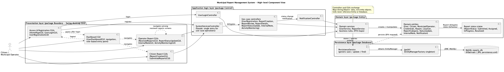
15 nodes, 24 edges; layout issues 6, 0.40 per node (edge-through-text 2, label-on-border 2, edge-through-own-label 1, busy 1)
# GR10-Q1 – Component view (UML component diagram) `view.puml` shows the high-level structure of the municipal problem-reporting desktop application (Java Swing + Hibernate/JPA + MySQL), derived from the packages in `src/main/java`. ## What it shows Four layers, each matching a source package, plus the external MySQL database: - **Presentation (`Boundary`)**: Swing GUIs, grouped into access/registration, dashboard, citizen report screens and operator screens. - **Application logic (`Control`)**: `SystemServicesController` is a facade that delegates to one controller per use case; `UserLoginController` is called directly by the login GUI; `NotificationController` is used by the status-update controller. - **Domain (`Entity`)**: JPA entities (users, reports, notes, notifications, ...), the status-state classes behind the `ReportStatus` interface, and the domain services `UserService` / `ReportService`, which hold the business rules. - **Persistence (`Database`)**: `PersistenceService` (generic save/update/find) over `JpaUtil` (EntityManagerFactory, unit defined in `persistence.xml`), connected to MySQL `reports_db`. ## How it addresses the concern - **Main components and responsibilities**: each component is labelled with its role and key classes. - **Layers/subsystems**: the four packages above. - **Main dependencies**: arrows go strictly downward (GUI -> controllers -> domain services -> persistence -> DB). Dotted arrows are GUI-to-GUI navigation and the JPA mapping of entities. - **Separation of UI, logic, domain, persistence**: the GUIs only talk to controllers and exchange `Map<String,Object>` data rather than entities. Controllers orchestrate use cases through the domain services. Only the domain services access persistence, and only `JpaUtil` touches the database. ## Observation The domain services live in the `Entity` package and call `PersistenceService` directly, so the domain layer depends on persistence. This is not a clean separation and is worth noting before planning evolution.
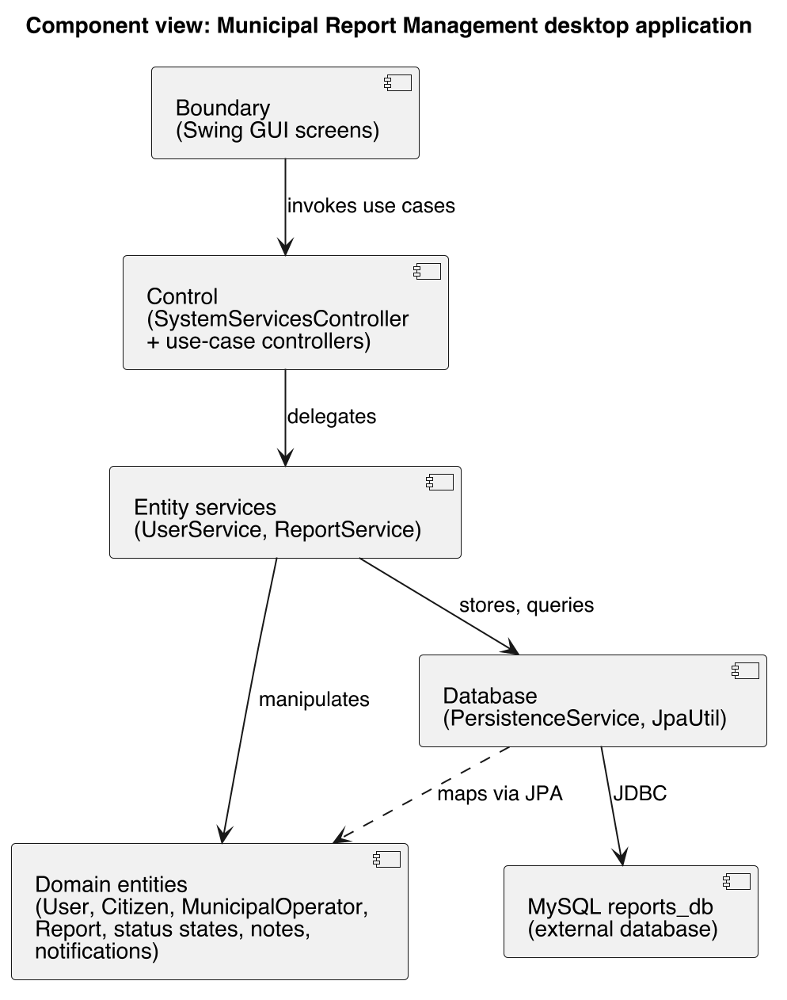
6 nodes, 6 edges; layout issues 0, 0.00 per node
# Component view: Municipal Report Management desktop application **Takeaway:** a layered Boundary → Control → Entity services → Database desktop application, where the domain entities are shared by services and persistence, and the data lives in one MySQL database. **Stakeholder:** software architect. **Detail level:** overview (6 components, budget ≤ 7), as the perspective is the whole system before planning evolution. ## How the view addresses the concern - **Main components and responsibilities:** Boundary = GUI screens (login, registration, dashboard, report creation, submitted/received reports, status update, internal notes, activity monitoring). Control = `SystemServicesController` facade plus one controller per use case, which checks roles and delegates. Entity services = `UserService`, `ReportService`, which hold the business operations. Domain entities = the JPA classes. Database = `PersistenceService` (save/update/find) and `JpaUtil` (EntityManagerFactory). - **Layers/subsystems:** the four packages `Boundary`, `Control`, `Entity`, `Database`; `Entity` is split into services and domain entities because they play different roles. - **Main dependencies:** arrows point from dependent to dependency (see the diagram labels). - **Separation UI / logic / domain / persistence:** UI only talks to Control, never to services or the database; persistence is reached only through the Entity services. ## Inventory (element → evidence) - Boundary: `src/main/java/Boundary/*GUI.java`; the GUIs create `SystemServicesController` (e.g. `ReportCreationGUI.java:70`); `UserLoginGUI.java:111` uses `UserLoginController` directly. Swing is inferred from the `.form` files (IntelliJ forms_rt, `pom.xml`). - Control: `Control/SystemServicesController.java:23-29` (creates the 7 use-case controllers); controllers create `UserService`/`ReportService` (e.g. `ReportReviewController.java:21-22`). - Entity services: `Entity/UserService.java:20`, `Entity/ReportService.java:22` (use `PersistenceService`). - Domain entities: `Entity/User.java:28`, `Citizen.java:11`, `MunicipalOperator.java:11`, `Report.java:31`, `Submitted/Assigned/InProgress/Resolved` implementing `ReportStatus`, `InternalNote`, `StatusUpdate`, `Notification`. - Database: `Database/PersistenceService.java`, `Database/JpaUtil.java:11`; entity mapping in `resources/META-INF/persistence.xml` (Hibernate, JDBC MySQL `127.0.0.1:3306/reports_db`). ## Omitted on purpose GUI-to-GUI navigation, individual controllers and GUIs, value classes (`Credentials`, `Location`, `ReportCategory`), tests, and class-level detail. ## Assumptions - `ReportStatusUpdateController` also uses `NotificationController`; shown only inside the merged Control component. - `Boundary` imports `Entity.ReportCategory` (`ReportCreationGUI.java:4`, `ReceivedReportsGUI.java:4`), a minor shortcut past Control that is not drawn. - The MySQL server is drawn as a component (an external system), not as a deployment node. ## Check result `puml-check`: 0 crossings, no overlaps, no tiny text; one advisory `aspect` warning (portrait ratio 0.79), which is accepted because the view is a layered chain. The first attempt (left-to-right, with interface lollipops) was too wide, and the second had edges through labels, so both were reverted. The image review found no further fixes.
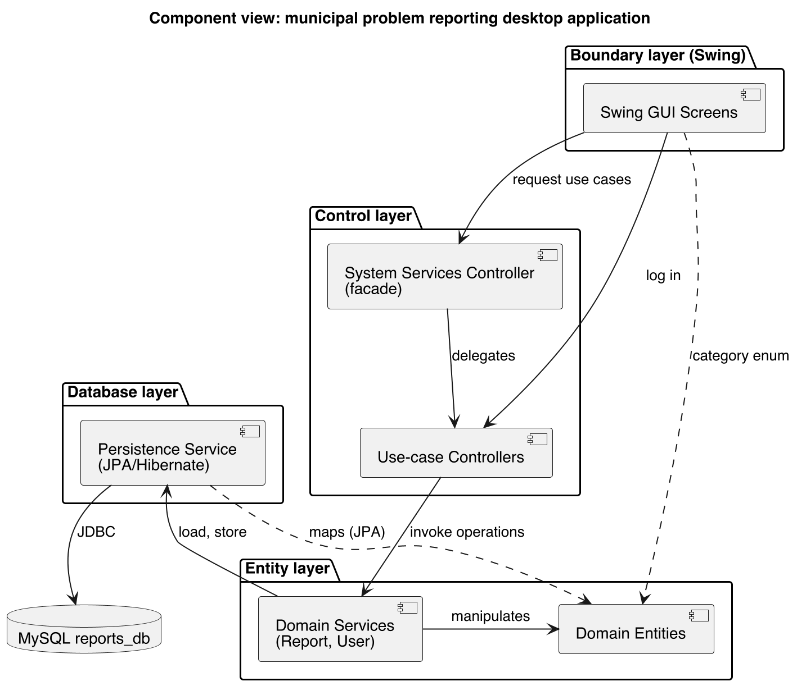
7 nodes, 9 edges; layout issues 0, 0.00 per node
# Component view: municipal problem reporting desktop application **Takeaway:** a four-layer Boundary → Control → Entity → Database application: Swing screens call a controller facade, controllers drive domain services that manipulate JPA entities, and a persistence service stores them in MySQL. **Stakeholder:** software architect. **Detail:** overview (7 elements), because the perspective is the whole system before planning evolution. Wording is technical (Swing, JPA/Hibernate, JDBC). ## How the concern is addressed - **Components and responsibilities:** one box per role (see inventory). - **Layers/subsystems:** the four packages mirror the source packages `Boundary`, `Control`, `Entity`, `Database`. - **Main dependencies:** the arrows; GUI → controllers → domain services → persistence → MySQL. - **UI / logic / domain / persistence separation:** Swing GUIs only call controllers; use-case logic lives in `Control`; entities are JPA-annotated classes; all `EntityManager` access is in `Database`. ## Inventory | Element | Evidence | |---|---| | Swing GUI Screens (10 `*GUI` classes) | `src/main/java/Boundary/HomePageGUI.java:6,75` (javax.swing, main) | | System Services Controller (facade) | `Control/SystemServicesController.java:22-29` creates the 7 use-case controllers; GUIs create it e.g. `Boundary/ReportCreationGUI.java:70` | | Use-case Controllers (incl. NotificationController) | `Control/ReportStatusUpdateController.java:21` | | Domain Services (ReportService, UserService) | `Entity/ReportService.java:22`, `Entity/UserService.java:20` | | Domain Entities | `Entity/User.java:28`, `Entity/Report.java:31`, `resources/META-INF/persistence.xml:14-20` | | Persistence Service (PersistenceService + JpaUtil) | `Database/PersistenceService.java:18`, `Database/JpaUtil.java:17` | | MySQL reports_db | `persistence.xml:26-27`, `pom.xml:43` | | Edge GUI → Use-case Controllers (log in) | `Boundary/UserLoginGUI.java:111` | | Edge GUI ⇢ Entities | `Boundary/ReceivedReportsGUI.java:4` imports `Entity.ReportCategory` | | Edge Persistence ⇢ Entities | JPA entities listed in `persistence.xml:14-20` | ## Omitted on purpose Individual GUI screens and controllers, concrete entity subclasses (Citizen, MunicipalOperator, statuses), Hibernate/JDBC driver as boxes (technology labels), tests. ## Assumptions - Layer names are the source package names; "Entity" holds both domain services and entities. - MySQL is shown as a database element, not a deployment node; it is external to the app. - Separation is by convention: the facade returns `Map<String,Object>` data (`SystemServicesController.java:35,85`), but one GUI imports an entity enum. ## Check result `puml-check`: 1 warning (aspect ratio 1.16 vs 1.78, tall because the layers are chained; left-to-right was worse at 3.87), 0 label/overlap issues, 1 edge crossing. Image review: all edges and labels readable; no change needed. Rendered with the plantuml-diagrams checker.
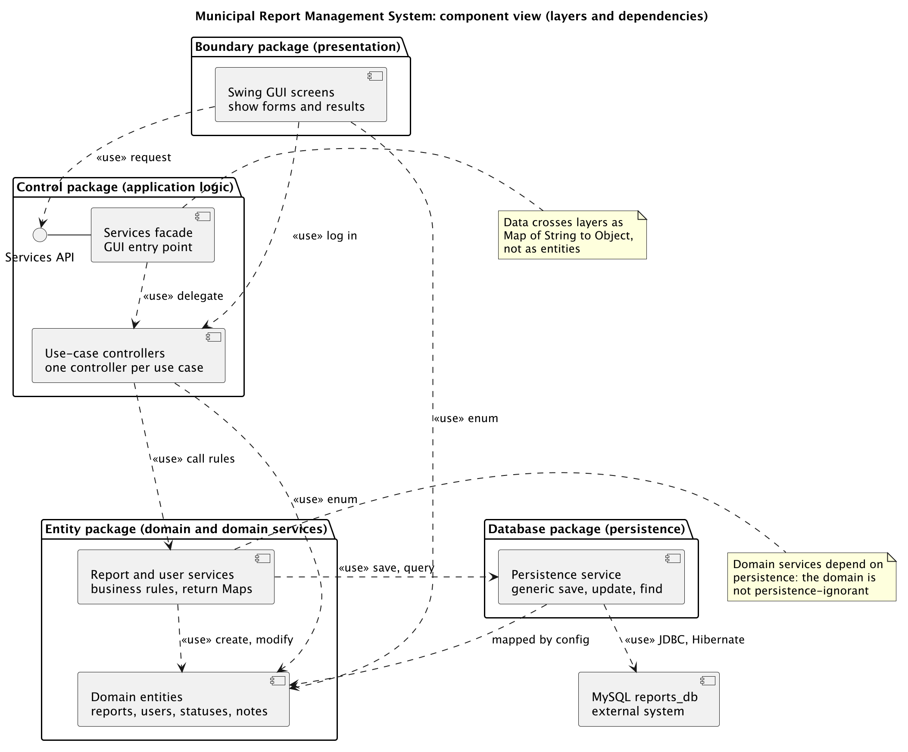
8 nodes, 13 edges; layout issues 3, 0.38 per node (edge-through-text 2, bundled-edges 1)
critic loop: kept v2 · first version
# Municipal Report Management System: component view (layers and dependencies) **Takeaway.** A standalone Swing desktop app in four Java packages: GUI screens call the Control package (facade and use-case controllers), which calls report and user services that sit in the Entity package and use a generic persistence service (JPA/Hibernate) to reach an external MySQL database. **Stakeholder:** software architect, whole system before planning evolution. **Detail:** balanced (12 elements), raised from overview. The reviewer asked for the layer packages and the facade interface to be drawn, and those need more elements than the 7-component overview budget. The previous version is in `v1/`. ## How the view addresses the concern - **Components and responsibilities:** each component carries a one-line responsibility under its name. Full text is in `inventory.json`. - **Layers:** the four code packages (Boundary, Control, Entity, Database) are drawn as enclosing packages, so layer membership is part of the model. `ReportService` and `UserService` are visibly inside the Entity package. - **Dependencies:** all are dashed «use» dependencies, pointing from dependent to dependency. - The GUI uses the facade through its «Services API» interface. Login bypasses it and uses its controller directly. - Controllers use the services, and the services use the entities and the persistence service. - Persistence reaches the external MySQL database over JDBC through Hibernate. - **Separation and collaboration:** - The GUI never reaches persistence. - Data crosses layers as `Map<String,Object>`, not as entities, except the `ReportCategory` enum, which is used by the GUI and the controllers. - The note on the services shows the main separation issue: the domain-side services depend on persistence, so the domain is not persistence-ignorant. `inventory.json` holds the evidence. `check_inventory.py`: 0 issues, 12 elements, 11 relations. ## Reviewer points (critique-1.json) - **Accepted:** - Packages are now containers. - Dependencies are dashed «use». - Responsibilities are on the components. - The Map contract is stated in a note. - The facade's provided interface is drawn. - The controller to entity dependency is added. - MySQL is marked external and sits outside all packages. - The persistence-to-entity link is relabelled "mapped by config". It comes from `persistence.xml`, not from a code import. - The services are no longer called "domain services". - **Not done, because the code contradicts it:** a required/provided interface for `PersistenceService`. It is a concrete class with no interface, so adding one would invent structure. It is listed under `omitted` in the inventory. - **Partly done:** the system boundary around all internal packages is not drawn as an extra box, to keep within two nesting levels and the element budget. MySQL is outside every package instead. ## Omitted on purpose Individual GUI, controller and entity classes; libraries (Swing, Hibernate); tests. ## Assumptions - The facade's provided interface is its public method set (`SystemServicesController`). The code has no explicit Java interface for it. - `NotificationController` is one of the use-case controllers. It is owned by the status-update controller, not by the facade. ## Check result `puml-check` renders with no error. It reports 4 warnings, against 1 for `v1/`: - aspect (portrait) - two package-crossing edges - bundled edges at the entities These come from drawing real cross-layer dependencies inside package containers. Moving to left-to-right earlier made collisions worse. I kept this version because `v1/` loses the layer, interface and responsibility details the concern asks for. `check_inventory.py` is clean.
“I am a DevOps engineer, and I would like a complete deployment view of the system.”
I am a DevOps engineer. I need to deploy and configure the system in a new execution environment. Before preparing the deployment, I need to understand which runtime environments and software artifacts are required, where the application and its data are executed and stored, and how the main runtime elements communicate with each other. I also need to identify the technologies and runtime dependencies involved in the communication between the application and the database.
| entity of interest | desktop application for reporting and managing problems in a municipal area |
|---|---|
| stakeholder | DevOps engineer |
| perspective | runtime and operations; deploying the system in a new environment (detail level: detailed) |
| concern | deployment, connectivity |
| concern details |
|
| aspect | structural (runtime) |
| viewpoint | deployment |
| model kind | UML deployment diagram |
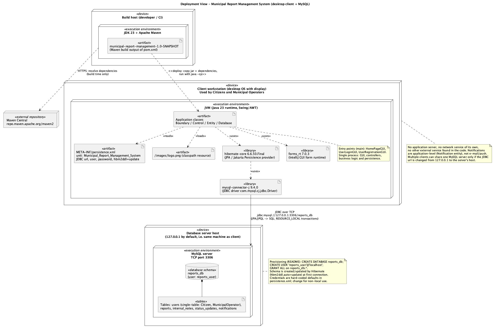
11 nodes, 12 edges; layout issues 6, 0.55 per node (edge-crosses-nested-borders 2, edge-through-own-label 2, edge-through-cluster 1, busy 1)
# GR10-Q2 – Deployment view (UML deployment diagram) `view.puml` shows how the Municipal Report Management System is deployed and how its runtime elements connect. It was derived from `pom.xml`, `persistence.xml`, `Database/*`, the `main` methods in `Boundary/*`, and the README. ## How it addresses the concern - **Required runtime environments and artifacts:** Client workstation runs a Java 23 JVM with the application classes, `persistence.xml`, the logo resource, and the libraries hibernate-core 6.6.50.Final, mysql-connector-j 9.4.0 and forms_rt 7.0.3. A MySQL server is the second environment. A build host (JDK 23 + Maven) produces the artifact and resolves dependencies from Maven Central. - **Where the application runs and where data is stored:** The whole application (Swing GUI, controllers, entities, persistence) is one desktop process on the client. Data lives only in the MySQL schema `reports_db` (tables `users`, `reports`, `internal_notes`, `status_updates`, `notifications`). By default MySQL is on `127.0.0.1`, i.e. the same machine. - **How the main elements communicate:** The only runtime link is JDBC over TCP (port 3306) from the client JVM to MySQL, via JPA/Hibernate. Maven Central access is build-time only. The code has no application server, web service or e-mail integration. - **Technologies and runtime dependencies between app and DB:** JPA (Hibernate, `RESOURCE_LOCAL` transactions) → MySQL Connector/J (`com.mysql.cj.jdbc.Driver`) → MySQL. The database, user `reports_user` and grants must exist before first run; Hibernate then creates/updates the tables (`hbm2ddl.auto=update`). ## Deployment notes - Credentials and the JDBC URL are hard-coded in `persistence.xml`; to use a remote DB, change the URL, user and password there, and open port 3306. - The repository defines no packaging (no jar/shade plugin, no manifest), so the "deploy" step shown (jar + dependencies on the classpath) is an inference; start from a `main` class such as `Boundary.HomePageGUI`. - `pom.xml` has a typo (`configuretion`), so the compiler plugin settings are ignored. The JDK 23 requirement comes from the properties and README. - The black-box tests need a running MySQL instance and may open Swing dialogs.
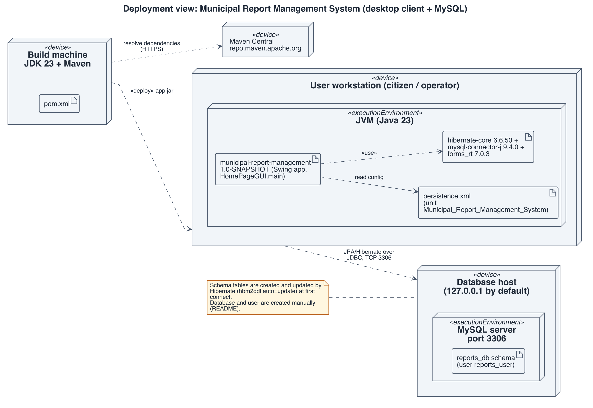
6 nodes, 6 edges; layout issues 1, 0.17 per node (busy 1)
# Deployment view – Municipal Report Management System **Takeaway:** a Java 23 Swing desktop client (with Hibernate/JDBC embedded) runs on each user workstation and talks directly over JDBC/TCP 3306 to a MySQL server holding schema `reports_db`; there is no application server. **Stakeholder:** DevOps engineer, deploying to a new environment. **Detail:** overview (whole system; 6 nodes, 7 artifacts), engineering wording (technologies and protocols named). Files: `view.puml` (source), `view.png` (render). ## How the view addresses the concern - **Required runtime environments and artifacts:** JVM (Java 23) on the workstation; MySQL server on the database host; app artifact, `persistence.xml`, and library jars (hibernate-core, mysql-connector-j, forms_rt); JDK 23 + Maven on the build machine. - **Where the app runs / where data is stored:** app on the user workstation inside the JVM; data in the `reports_db` schema on the MySQL server (default host 127.0.0.1, i.e. same machine unless the URL is changed). - **How runtime elements communicate:** workstation → DB host via JPA/Hibernate over JDBC, TCP 3306; build machine → Maven Central over HTTPS (build time only). - **Technologies and dependencies app ↔ database:** Hibernate 6.6.50 (JPA, `RESOURCE_LOCAL`), MySQL Connector/J 9.4.0 driver `com.mysql.cj.jdbc.Driver`, persistence unit `Municipal_Report_Management_System`, DB user `reports_user`; note records that Hibernate creates/updates tables (`hbm2ddl.auto=update`) while the database and user are created manually. ## Inventory (element → evidence) | Element | Evidence | |---|---| | JVM Java 23 | `pom.xml:13-14` | | App artifact `municipal-report-management 1.0-SNAPSHOT`, entry `HomePageGUI.main` | `pom.xml:8-10`, `src/main/java/Boundary/HomePageGUI.java:75` | | Library jars | `pom.xml:34-52` | | `persistence.xml`, unit name | `src/main/resources/META-INF/persistence.xml:10` | | JDBC driver, URL (127.0.0.1:3306/reports_db), user | `persistence.xml:23-33` | | `hbm2ddl.auto=update` | `persistence.xml:35-36` | | Unit loaded by app | `src/main/java/Database/JpaUtil.java:17` | | MySQL server, DB/user creation | `README.md` "MySQL setup" | | Maven Central | `pom.xml:18-22` | ## Omitted on purpose BCED layers (Boundary/Control/Entity/Database) and entity classes (component/class concerns), tests and JUnit, Hibernate properties for SQL logging, the three alternative `main` methods (login, registration, home). ## Assumptions / unconfirmed - Distribution form of the app (jar, launch script) is not defined: no packaging/shade/manifest config in `pom.xml`; "app jar" is the default Maven output (unconfirmed). Also `pom.xml:64` has a typo `configuretion`, so compiler settings fall to the properties. - Workstation and DB host are separate nodes in the diagram; the code defaults make them the same machine (127.0.0.1). A remote DB requires editing `persistence.xml`. - Build machine and "deploy" edge reflect the Maven workflow, not a CI/CD pipeline (none in the repo). Credentials are hardcoded in `persistence.xml`. ## Check result Final `puml-check`: OK, 0 warnings (one advisory "busy" info). Image review: an initial edge cut through the workstation boxes and was fixed by linking containers and moving the note; no other changes.
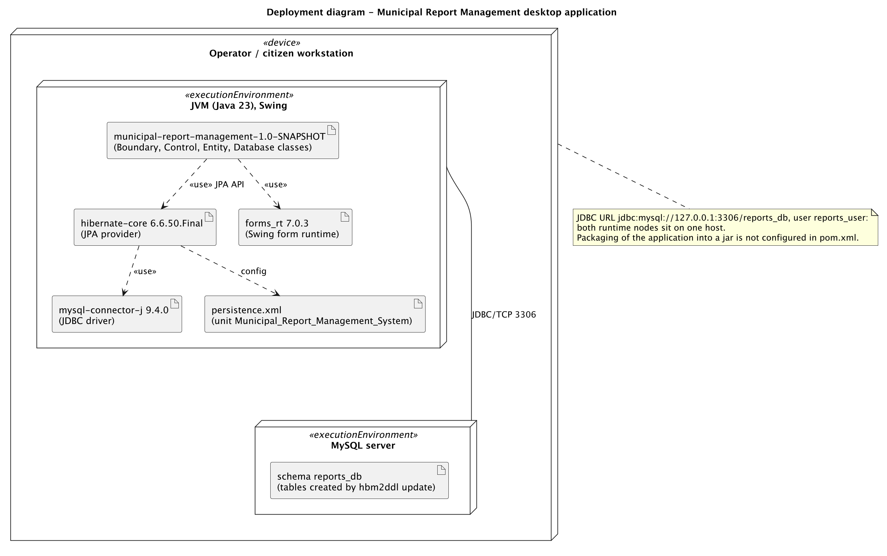
6 nodes, 6 edges; layout issues 0, 0.00 per node
# Deployment view — Municipal Report Management desktop application **Takeaway:** the application is a Java 23 Swing desktop program that runs in one JVM and reaches a MySQL schema `reports_db` through Hibernate/JDBC over TCP at 127.0.0.1:3306, so both must be installed on the same workstation. **Stakeholder:** DevOps engineer. **Detail:** overview (whole-system deployment, 6 nodes/artifacts-level elements). ## How the concern is addressed - **Runtime environments and artifacts:** JVM (Java 23) and MySQL server nodes; artifacts: application (artifactId/version), hibernate-core, mysql-connector-j, forms_rt, persistence.xml, schema reports_db. - **Where it runs / where data lives:** the application runs in the JVM on the workstation; data lives in the `reports_db` schema in the MySQL server, created/updated by Hibernate (`hbm2ddl.auto=update`). - **Communication:** one communication path, JDBC over TCP, port 3306; internal dependencies between artifacts are `«use»`. No other network link exists in the code (no HTTP/mail/socket usage found). - **Technologies and dependencies app↔DB:** Hibernate 6.6.50 (JPA, RESOURCE_LOCAL) → MySQL Connector/J 9.4.0 → MySQL; credentials/URL come from persistence.xml. ## Inventory (element → evidence) - Workstation, JVM Java 23: pom.xml:13-14; README.md "Requirements"; Swing entry points `main` at Boundary/HomePageGUI.java:75, UserLoginGUI.java:91, UserRegistrationGUI.java:145. - Application artifact: pom.xml:8-10. - hibernate-core: pom.xml:48-52; forms_rt: pom.xml:35-38; mysql-connector-j: pom.xml:42-45. - persistence.xml (unit, provider): src/main/resources/META-INF/persistence.xml:10,12. - JDBC driver/URL/user: persistence.xml:23-33; schema auto-update: :35-36. - JpaUtil creates the EntityManagerFactory: Database/JpaUtil.java:17. - MySQL server / reports_db: persistence.xml:27; README.md "MySQL setup". ## Omitted on purpose Classes/packages (component-level concern), tests, Maven Central build-time repository (pom.xml:18-22), IDE files. ## Assumptions / unconfirmed - Same host for app and MySQL is derived from the 127.0.0.1 URL; a remote DB would need that URL changed. - "Operator / citizen workstation" is a generic device; code names no OS or hardware. - (unconfirmed) How the application is packaged/launched: pom.xml has no jar/shade/main-class setup, and the compiler plugin block uses the misspelled `<configuretion>` (pom.xml:64), so it is ignored; the artifact is shown by its Maven coordinates. - Credentials are in plain text in persistence.xml (README advises changing them). ## Check result puml-check: OK, 0 issues on the final run (first runs had label-on-border/edge-through-label warnings, fixed by shortening labels and lengthening the edge). Image review: readable, no changes needed.
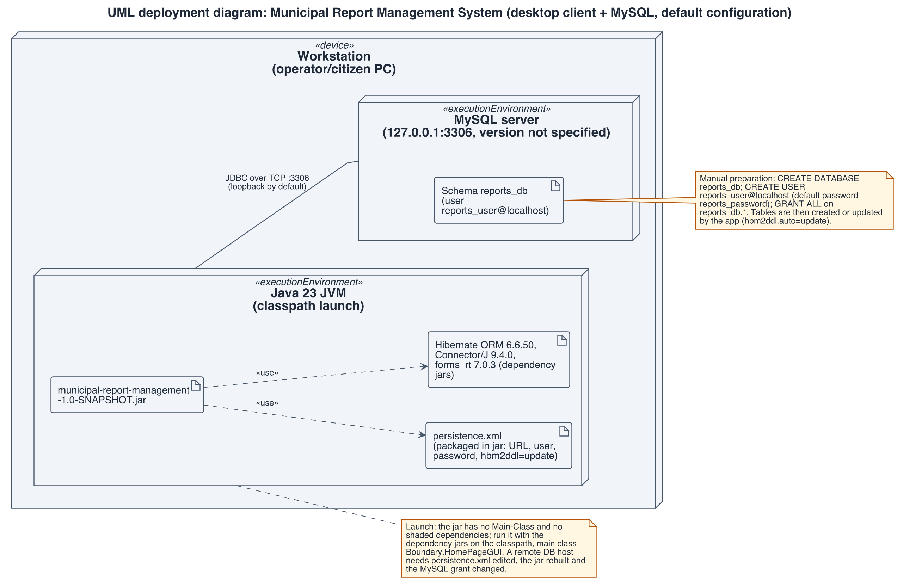
4 nodes, 4 edges; layout issues 0, 0.00 per node
critic loop: kept v2 · first version
# Deployment view: Municipal Report Management System (revision 1) **Takeaway:** with the shipped configuration the system is one Java 23 Swing process and one MySQL server on the same machine, connected by JDBC over TCP (loopback, port 3306). A new environment needs a JVM, the jar plus its dependency jars, and a manually prepared `reports_db`. **Stakeholder:** DevOps engineer deploying to a new environment. **Detail level:** balanced (7 nodes/artifacts), with technical wording (versions, protocol, launch details). Files: `view.puml`, `view.png`, `inventory.json` (evidence per element and relation). The previous version is in `v1/`. ## How the concern is addressed - **Runtime environments and artifacts:** the Java 23 JVM, the application jar, the dependency jars (Hibernate 6.6.50, Connector/J 9.4.0, forms_rt 7.0.3), `persistence.xml` and the MySQL server. The MySQL version is not specified in the code, and the diagram says so. The launch note says: no Main-Class and no shaded jar, so run with the dependency jars on the classpath, main class `Boundary.HomePageGUI`. - **Where it runs and where data is stored:** the client and MySQL both sit on the workstation. Data is in schema `reports_db`, accessed as `reports_user@localhost`. - **Communication:** one undirected communication path, JDBC over TCP :3306, loopback by default. There is no other runtime link, because it is a single process with no server tier. - **Technologies and dependencies:** the app uses the dependency jars and the `persistence.xml` packaged in the jar (JDBC URL, user, hard-coded password, `hbm2ddl.auto=update`). The manual preparation note gives `CREATE DATABASE`, `CREATE USER` with the default password, and `GRANT ALL`. Changing host or password means editing `persistence.xml` and rebuilding. ## Changes from v1 (reviewer critique) - MySQL now sits on the workstation, since the URL is `127.0.0.1` and the grant is for `localhost`. The separate database host is gone, and a note says a remote host needs config, rebuild and grant changes. - `persistence.xml` stays an artifact in the JVM. I did not nest it inside the jar artifact, which is the reviewer's UML fix and remains open. I did not try nesting; its label states it is packaged in the jar, and the app-to-`persistence.xml` link is a `<<use>>` dependency. - Added forms_rt 7.0.3, the launch note and the database preparation note (now attached to the schema). - The JDBC path is undirected; the dependencies use `<<use>>`. ## Where I kept my version - The reviewer says the jar is "packaged as jar". `pom.xml` has no `<packaging>` element, so jar is the Maven default. The diagram shows a jar and notes that there is no Main-Class or shade plugin. - The communication path joins the JVM and MySQL containers. The Connector/J driver inside the JVM makes the call. ## Omitted on purpose The Boundary/Control/Entity/Database layers (a component view), JUnit tests (test scope), and a remote DB host (unsupported without changes). ## Assumptions - "Operator/citizen PC" for the workstation is inferred from the Swing `main` entry points. The code has no deployment descriptors, containers or CI. - The compiler plugin block is misspelled (`configuretion` in `pom.xml`), so the Java 23 source/target settings may not be applied (`maven.compiler.*` properties are set). - `pom.xml` has no assembly/dependency-copy plugin, so how the dependency jars reach the classpath is left to the operator (for example `mvn dependency:copy-dependencies`; not in the repo). ## Check result - `puml-check`: OK, no warnings (ratio 1.54 vs 1.78). - `check_inventory.py`: 0 issues, 7 elements, 3 relations.
“I am a software analyst, and I would like a use case diagram showing the functionalities provided by the system.”
I am a business analyst. I need to understand at a high level how a system for reporting and managing problems in a municipal area is expected to work. I know that the application should allow people to report issues in the territory and support the municipality in managing them, but I do not yet know the specific user roles or the functionalities available to each of them. I need to identify the main types of users that interact with the system, the main goals they can achieve through it, and how the different functionalities are related to each other.
| entity of interest | desktop application for reporting and managing problems in a municipal area |
|---|---|
| stakeholder | software analyst |
| perspective | what the system offers its users, without knowing the user roles yet (detail level: overview) |
| concern | general |
| concern details |
|
| aspect | functional |
| viewpoint | use case |
| model kind | UML use case diagram |
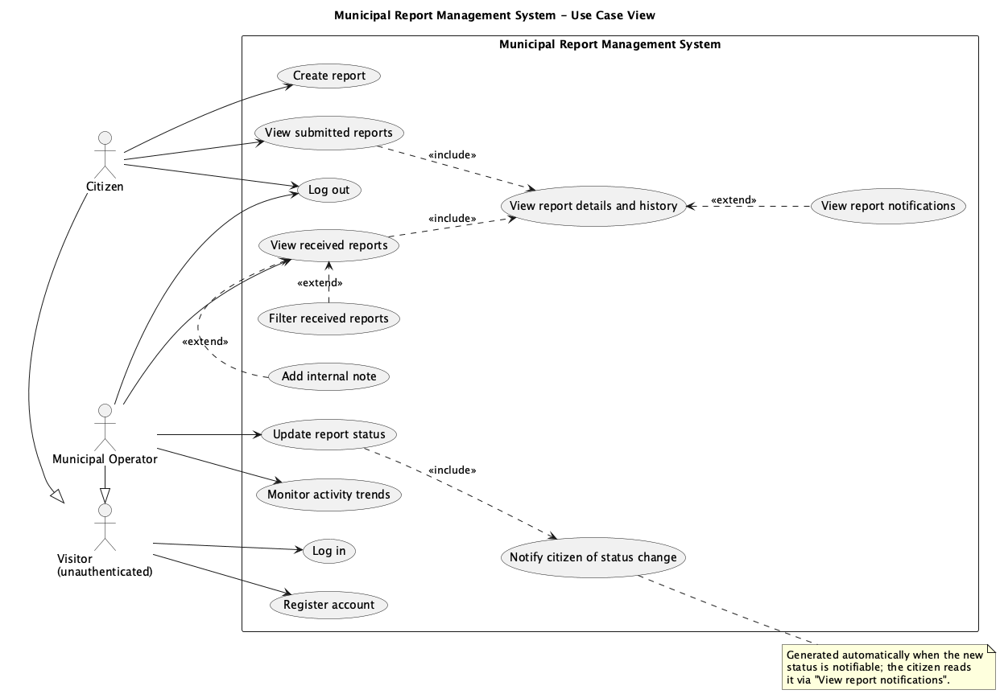
16 nodes, 18 edges; layout issues 4, 0.25 per node (edge-through-own-label 2, bundled-edges 1, busy 1)
# Use case view - Municipal Report Management System **Viewpoint / model kind:** use case, UML use case diagram (`view.puml`). **Aspect:** functional. ## What it shows The functionalities the desktop application offers, grouped by the actors that use them, and the relations among the functionalities. Derived from `Boundary/UserDashboardGUI` (role-dependent buttons), `Boundary/HomePageGUI`, the `Control/*Controller` classes (role checks via `UserService`) and `Boundary/ReceivedReportsGUI` / `SubmittedReportsGUI`. ## How it addresses the concern - **Main types of users:** *Visitor* (not logged in; home page offers Register and Log in), and its two specializations *Citizen* and *Municipal Operator*. The dashboard shows different functions per role, and controllers reject the wrong role (e.g. "Only citizens can create reports", "Only an operator can update the status"). - **Goals of each user:** - Visitor: register, log in. - Citizen: create a report, view own submitted reports (with details/history and notifications), log out. - Operator: view received reports (filter them, add internal notes), update report status (Submitted -> Assigned -> In Progress -> Resolved), monitor activity trends, log out. - **Relations between functionalities:** `include` for behaviour always performed (viewing either report list shows report details/history; a status update always triggers the notification step, which sends a citizen notification only when the new status is notifiable); `extend` for optional behaviour (filtering and adding internal notes from the received-reports list; reading notifications from a report's details). ## Notes - Login/registration are shown for the Visitor; Citizen and Operator inherit them. Log out is available to both roles. - Status update and internal notes are reached through the received-reports list in the code, hence the relations modelled on that use case.
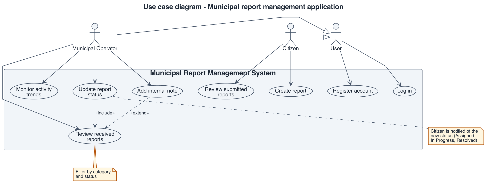
11 nodes, 13 edges; layout issues 1, 0.09 per node (edge-through-text 1)
# Use case view: Municipal report management application **Takeaway:** a Citizen can register, log in, create reports and follow their own reports; a Municipal Operator can review all received reports, advance their status (with a citizen notification), add internal notes and monitor activity trends. - Stakeholder: software analyst. Detail level: overview, 8 use cases (budget ≤ 8), domain wording, no technology names. - Files: `view.puml`, `view.png` (`out/` holds the checker/renderer output). ## How the view addresses the concern | Concern | Where in the view | |---|---| | Main types of users | Actors Citizen and Municipal Operator, both specializing the abstract actor User (`Entity/User.java:28`, `Citizen.java:11`, `MunicipalOperator.java:11`). | | Goals of each | Citizen: create report, review submitted reports. Operator: review received reports, update status, add internal note, monitor trends. Both: register, log in. | | Relations between functionalities | «include»: update status needs the received-reports review (the update button opens the received-reports screen, `UserDashboardGUI.java:575`). «extend»: internal note is opened from a report's details in that review (`ReceivedReportsGUI.java:790`). Generalization of actors. | ## Inventory (element → evidence) - Register account → `HomePageGUI.java:49`, `UserRegistrationController.java:23` - Log in → `HomePageGUI.java:52`, `UserLoginController.java:24` - Create report → `UserDashboardGUI.java:100`, citizen only (`:321`), `ReportCreationController.java:146` - Review submitted reports → `UserDashboardGUI.java:101`, `ReportReviewController.java:28` - Review received reports (filter by category and status) → `UserDashboardGUI.java:102`, `ReceivedReportsGUI.java:411`, `ReportReviewController.java:44` - Update report status → `UserDashboardGUI.java:103`, `ReportStatusUpdateController.java:27` (operator only) - Citizen notification (note on Update report status) → `NotificationController.java:22,46` - Add internal note → `InternalNoteController.java:25` (operator only) - Monitor activity trends → `UserDashboardGUI.java:104`, `ActivityMonitoringController.java:28` (operator only) ## Omitted on purpose Log out, report details/history screens (folded into the two review use cases), the three monitoring variants (general, in progress, area summary), and the notification as its own use case (it is automatic). ## Assumptions - "User" is an abstract actor drawn from the entity hierarchy. Registration and login are available before a role exists, so the actor owning them is the generalization. - The login and registration screens are reachable without authentication (`HomePageGUI`). ## Check result Final `puml-check`: 2 warnings (aspect 2.6:1, too wide; one edge from Operator passing through the system boundary title), 1 crossing. The first layout (left to right) had 2 warnings too, but was too tall (1.19:1) and had the same title crossing. Two attempts to remove the title crossing (an edge direction hint and a note move) increased crossings (3 to 4, then 1 to 5), so I reverted to the best version. Image review: all inventory items are drawn, and no labels overlap.
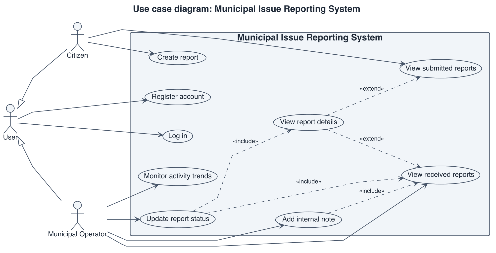
12 nodes, 15 edges; layout issues 1, 0.08 per node (edge-through-text 1)
# Use case view: Municipal Issue Reporting System **Takeaway:** the system lets any user register and log in, citizens report and follow municipal problems, and municipal operators review, process and monitor them. **Stakeholder:** software analyst. **Detail level:** overview (whole system, domain wording, no technology names). Files: `view.puml` (source), `view.png` (render). ## How the view answers the concern - **Main types of users:** actors `Citizen` and `Municipal Operator`, both specializing the abstract `User` (Entity `User`, `Citizen`, `MunicipalOperator`). - **Goals of each:** Citizen: Create report, View submitted reports. Operator: View received reports, Update report status, Add internal note, Monitor activity trends. Both (through `User`): Register account, Log in. - **How functionalities relate:** «extend» from View report details to the two report lists (opened optionally from a selected row); «include» from Update report status and Add internal note to View received reports (the operator picks a report in that list first), and from Update report status to View report details (the status screen loads the details). ## Inventory (element -> evidence) | Element | Evidence | |---|---| | User / Citizen / Municipal Operator | `Entity/User.java:28`, `Citizen.java:11`, `MunicipalOperator.java:11` | | Register account (role chosen in a combo box) | `Boundary/UserRegistrationGUI.java:214`, `:32`; `Control/UserRegistrationController.java:55-64`; `Control/SystemServicesController.java:registerUser` | | Log in | `Boundary/HomePageGUI.java:110`, `Boundary/UserLoginGUI.java`, `Control/UserLoginController.java:49` | | Create report (citizen only) | `Boundary/UserDashboardGUI.java:447`, `Control/ReportCreationController.java:155` | | View submitted reports (citizen only) | `UserDashboardGUI.java:476`, `Control/ReportReviewController.java:34` | | View received reports (operator only, with filters) | `UserDashboardGUI.java:506`, `Control/ReportReviewController.java:53`, `Boundary/ReceivedReportsGUI.java:117,176` | | View report details | `ReceivedReportsGUI.java:254`, `SubmittedReportsGUI.java:164`, `ReportStatusUpdateGUI.java:450`, `Control/ReportDetailsController.java:42-49` | | Update report status (operator only) | `UserDashboardGUI.java:566` (opens `ReceivedReportsGUI(..., true)` :575), `Control/ReportStatusUpdateController.java:40` | | Add internal note (operator only) | `ReceivedReportsGUI.java:790`, `Control/InternalNoteController.java:56` | | Monitor activity trends (operator only) | `UserDashboardGUI.java:536`, `Control/ActivityMonitoringController.java:38` | ## Omitted on purpose Log out and Back to dashboard (navigation); filter/clear-filter and image attachment (parts of other use cases); the citizen notification sent when a status changes (`Control/ReportStatusUpdateController.java:104` -> `NotificationController`) is an internal effect of Update report status, not a separate user goal. The view has 9 use cases, one over the budget of 8, because two actor groups share the system; dropping one would lose a goal. ## Assumptions - The generalization from `User` to the two roles is drawn from the entity classes; the login and registration screens are reachable without a role. - «include»/«extend» are inferred from the screen navigation, not from an explicit feature model. ## Check result Final `puml-check`: 1 warning (a Citizen edge passes through the system boundary title). An alternative layout removed it but added 5 edge crossings, so the first version was kept. The image review found no overlapping labels.
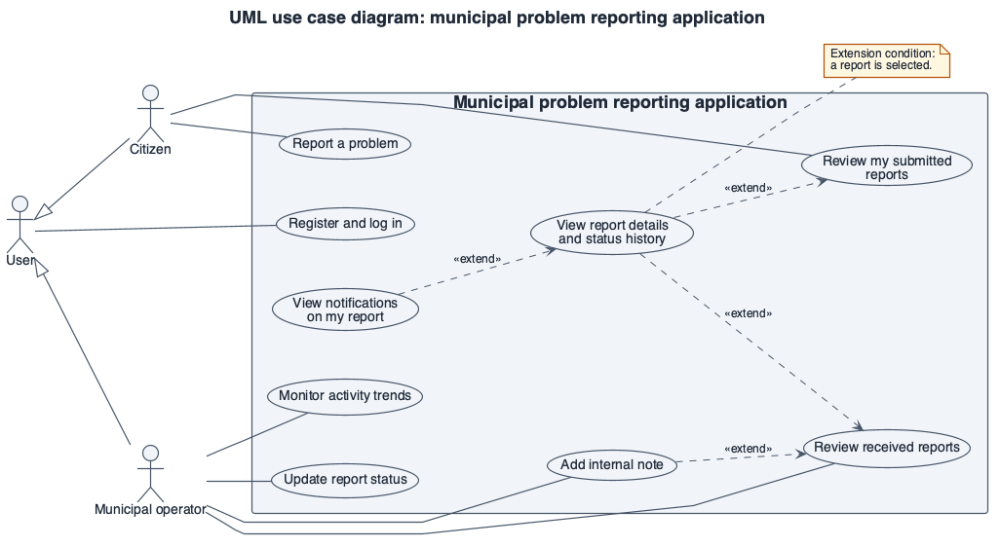
12 nodes, 14 edges; layout issues 1, 0.08 per node (edge-through-text 1)
critic loop: kept v2 · first version
# UML use case diagram: municipal problem reporting application Files: `view.puml` (source), `view.png` (render), `inventory.json` (evidence for every element and relation). The first version is in `v1/`; the reviewer's critique is in `critique-1.json`. **Takeaway.** Any user registers and logs in. Citizens report problems and follow their reports and notifications. Municipal operators review received reports, update status, annotate and monitor activity. **Stakeholder:** software analyst. **Detail level:** overview, because the perspective is what the whole system offers. Wording is domain terms only, with no technology names. ## How the view answers the concern - **Main types of users.** "User" is the base actor, the person before login. Citizen and Municipal operator specialise it by generalisation. They match the persisted roles (`Entity/User.java:18` with its Citizen and MunicipalOperator subtypes, role chosen at `UserRegistrationGUI.java:183`). The dashboard shows each role only its own functions (`UserDashboardGUI.java:316-352`). - **Goals of each user.** - User (so also Citizen and Operator): register and log in. - Citizen: report a problem; review my submitted reports; view notifications on my report. - Operator: review received reports; update report status; add an internal note; monitor activity trends. - **How the functions relate.** - "View report details and status history" «extend»s both review use cases. The condition, shown in a note, is that a report is selected (`SubmittedReportsGUI.java:154-168`, `ReceivedReportsGUI.java:244-258`). - "View notifications on my report" «extend»s the details use case. It is an option in the details dialog (`SubmittedReportsGUI.java:236-262`), fed by `NotificationController.sendNotificationToCitizen`. - "Add internal note" «extend»s "Review received reports" (`ReceivedReportsGUI.java:790`). - "Update report status" is a top-level operator goal with its own dashboard entry (`UserDashboardGUI.java:575`), so it has no «extend». ## What changed from v1 and why Changes made because the reviewer's points held in the code: - «include» became «extend» for details, since details are shown only on request. - The Visitor actor became "User" with generalisation, and the explanatory note was removed. - Added the citizen goal "View notifications on my report". - Renamed "Update report status and notify citizen" to "Update report status" and dropped its «extend». The notification is a system-side result: `NotificationController.verifyNotifiableStatus` sends it only for notifiable statuses. The citizen sees it through "View notifications". Reviewer points not applied: - None rejected. The suggestion to attach the "report selected" condition to the extend relations is done with one shared note, not per-arrow constraints, to keep the diagram readable. ## Omitted on purpose - Logout and dashboard navigation (navigation, not a goal). - Persistence and entity classes (internal). - Viewing the report image and viewing history as separate goals (they are options within the details dialog). ## Assumptions - "User" as the base actor reads "anyone who may log in". The unauthenticated state is not modelled as a separate actor. - Operators also see the details dialog (`ReceivedReportsGUI.java:244-258`). They do not get the citizen's notifications option, so that extend is tied to the citizen path only. ## Check results - `puml-check`: WARN, one `edge-through-text` plus one crossing. The Citizen–"Review my submitted reports" line passes through the system boundary label. One reordering attempt did not reduce it, so I kept the readable layout. - `check_inventory.py`: no unbacked items and all relations match. It reports one issue, the budget: 13 elements against 8. The script counts the 3 actors and the system boundary as elements. The view now has 9 use cases, one over the skill's 8-use-case budget. The extra one is the citizen's "View notifications", which the reviewer asked for. I merged register and login already, and any further merge would hide a goal. This is a deliberate overrun, not a fix pending.
“I am a database engineer. I need to modify the persistence layer to support future changes to the management of municipal reports. Before modifying the database, I need to understand the main data entities stored by the system, the relationships among them, and which information must be persisted throughout the lifecycle of a report. In particular, I need to understand how users, reports, locations, categories, states, state changes, internal notes, and notifications are related, and which parts of the application depend on this persisted information.”
| entity of interest | desktop application for reporting and managing problems in a municipal area |
|---|---|
| stakeholder | database engineer |
| perspective | the persistence layer, before changing how reports are managed (detail level: detailed) |
| concern | general |
| concern details |
|
| aspect | informational |
| viewpoint | data model |
| model kind | UML class diagram |
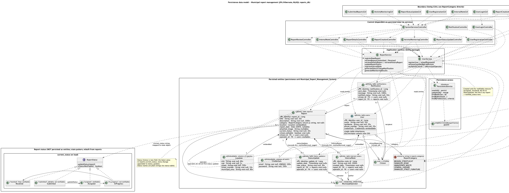
37 nodes, 66 edges; layout issues 15, 0.41 per node (bundled-edges 6, edge-through-text 4, detached-label 2, edge-crosses-nested-borders 1, many-crossings 1, busy 1)
# GR10-Q3 – Data model view (UML class diagram) **Viewpoint / model kind:** data model, UML class diagram. **Aspect:** informational. **Stakeholder:** database engineer, preparing to change the persistence layer. **Source:** `Entity/*.java` (JPA annotations), `META-INF/persistence.xml`, `Database/PersistenceService.java`, and the callers in `Control/` and `Boundary/`. ## What it shows - **Persisted entities.** `users` (single table, discriminator `role`: Citizen / MunicipalOperator, with embedded `Credentials`), `reports` (with embedded `Location` and the `ReportCategory` enum stored as a string), `status_updates`, `internal_notes` and `notifications`. Columns, keys, nullability and lengths are taken from the annotations. - **Relationships and cardinalities.** A report belongs to exactly one citizen and has 0..1 assigned operators. It owns 0..* status updates and 0..* internal notes (cascade ALL, orphan removal). Updates and notes each record the operator who made them. A notification points to one report and one citizen recipient. - **Status.** Statuses are not tables. `reports.current_status` holds a string (`submitted`, `assigned`, `in_progress`, `resolved`), and the state classes (`Submitted` … `Resolved`) are rebuilt from it on load. The package is drawn separately and marked non-persisted. - **Dependents.** `PersistenceService` is the only access point to JPA. `UserService` and `ReportService` use it. The controllers call those services, `SystemServicesController` is the façade, and the GUIs call that façade (`UserLoginGUI` calls `UserLoginController` directly). `ReportCategory` is also used directly by two GUIs. ## How it addresses the concern | Concern | Where in the view | |---|---| | Main entities and relationships | The "Persisted entities" package and its associations | | Information persisted over a report's lifecycle | `Report` (current status, editability, operator, date, image), `StatusUpdate` (one row per transition with timestamp and operator), `InternalNote`, `Notification` (only for notifiable statuses), and the status state machine | | How users, reports, locations, categories, states, state changes, notes and notifications relate | `Location` and `ReportCategory` are columns of `reports`. States are the `current_status` string. State changes are `status_updates`. Notes and notifications are child tables of `reports`. Users are linked through `citizen_id` and `operator_id`. | | Parts of the application that depend on the data | The service, control and boundary packages, with dependency arrows | ## Points to check before changing the schema - Status names are duplicated as strings in `reports.current_status`, `status_updates.new_status` and `notifications.notified_status`, and in the code constants. Only `current_status` is validated on load. - Notifications have no key to the status update that triggered them. The link is by report and status text. - The email uniqueness constraint is on `users.email`. Passwords are stored as plain strings in the code. - The schema is generated by Hibernate (`hbm2ddl.auto=update`) and there are no migration scripts. - `Report.location` is not a table. Changing it means changing columns in `reports`. - `reports.operator_id` is set at the first status update (`updateReportStatus` calls `assignOperator`). - Reports are loaded with eager notes and updates.
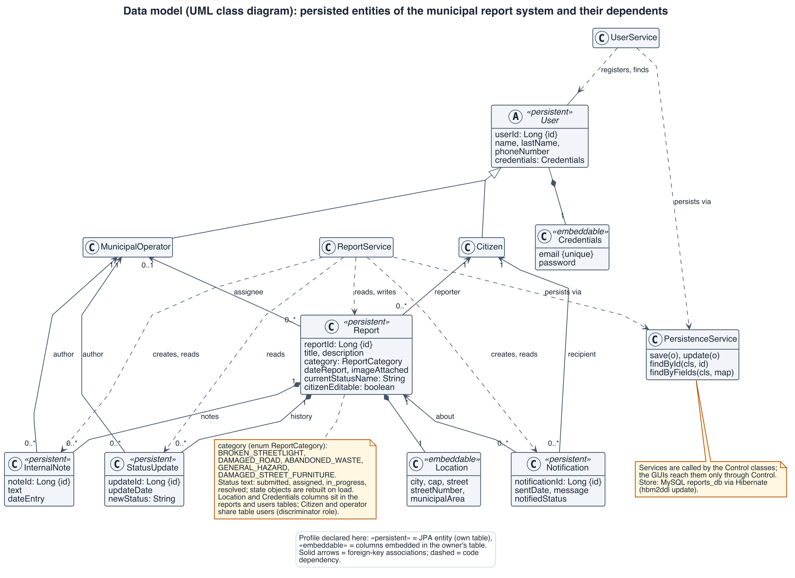
12 nodes, 20 edges; layout issues 4, 0.33 per node (edge-through-text 2, crowded-ends 1, busy 1)
# Data model view – persistence of municipal reports (UML class diagram) **Takeaway:** every report is one row in `reports` (with location and category inline) owned by a citizen and optionally assigned to an operator; its lifecycle is persisted as child rows (status updates, internal notes) plus notifications, and only `ReportService`/`UserService` (via `PersistenceService`) touch them. Stakeholder: database engineer, about to change report management. Detail level: *detailed* for the persistence area only (12 classes, within the ≤15 budget); technology names (JPA, Hibernate, MySQL) are used. ## How the view answers the concern - **Main entities and relations:** the persistent classes `User` (Citizen / MunicipalOperator, single table `users`, discriminator `role`), `Report`, `StatusUpdate`, `InternalNote`, `Notification`, with multiplicities on every foreign key. - **Lifecycle information:** `Report.currentStatusName` + `citizenEditable` (current state), `StatusUpdate` (history: date, new status, operator), `InternalNote` (text, date, operator), `Notification` (date, message, notified status, recipient). Status values are in the note on `Report`. - **Users, locations, categories, states:** users = `User` hierarchy + embedded `Credentials`; location = embedded `Location` (columns in `reports`); category = enum `ReportCategory` stored as string column (values in note); states = text column, not a table (the state objects are rebuilt on load and not persisted). - **Dependent parts:** `UserService`, `ReportService` and `PersistenceService` are shown with the entities they use. The note records that Control classes call the services and GUIs reach them only through Control (the Control/Boundary classes are not drawn, to stay one abstraction level). ## Inventory (evidence) | Element | Evidence | |---|---| | User, Citizen, MunicipalOperator, Credentials | `src/main/java/Entity/User.java:20-67`, `Citizen.java:9-10`, `MunicipalOperator.java:9-10`, `Credentials.java:9-16` | | Report, Location | `Report.java:29-112`, `Location.java:9-25` | | ReportCategory | `ReportCategory.java:6-12`, `Report.java:49-51` | | StatusUpdate | `StatusUpdate.java:20-53`; created `Report.java:367-382` | | InternalNote | `InternalNote.java:20-53`; created `Report.java:224-242` | | Notification | `Notification.java:19-53`; saved `ReportService.java:398` | | ReportService / UserService | `Entity/ReportService.java`, `Entity/UserService.java` (`persistenceService.*` calls) | | PersistenceService, store | `Database/PersistenceService.java:24,51,116,177`, `META-INF/persistence.xml` | | Callers | `Control/*Controller.java` create the services; `Boundary/*GUI.java` use `SystemServicesController` | ## Omitted on purpose State classes (`Submitted`, `Assigned`, `InProgress`, `Resolved`, `ReportStatus`: not persisted), Control and Boundary classes, getters/validation, individual service methods. ## Assumptions - `Notification` has no inverse collection in `Report` and no cascade; it is persisted separately by `ReportService`. - Table names come from `@Table`; Location/Credentials columns are embedded, so no separate tables. `Notification.destinatario` is shown as `recipient`. - Dependency labels (reads/creates) summarise `ReportService` calls; `UserService` also uses `Citizen`/`MunicipalOperator` lookups through `User`. - `<<persistent>>`/`<<embeddable>>` are not UML standard stereotypes; they are declared as a profile in the legend. ## Check result Final `puml-check`: 3 warnings (two edge labels near a line, two crowded multiplicity ends at `MunicipalOperator`); first render had 13. Image review: moved the enum into a note and fixed a mis-rendered attribute; a variant with extra ranks was worse (13 warnings) and was reverted.
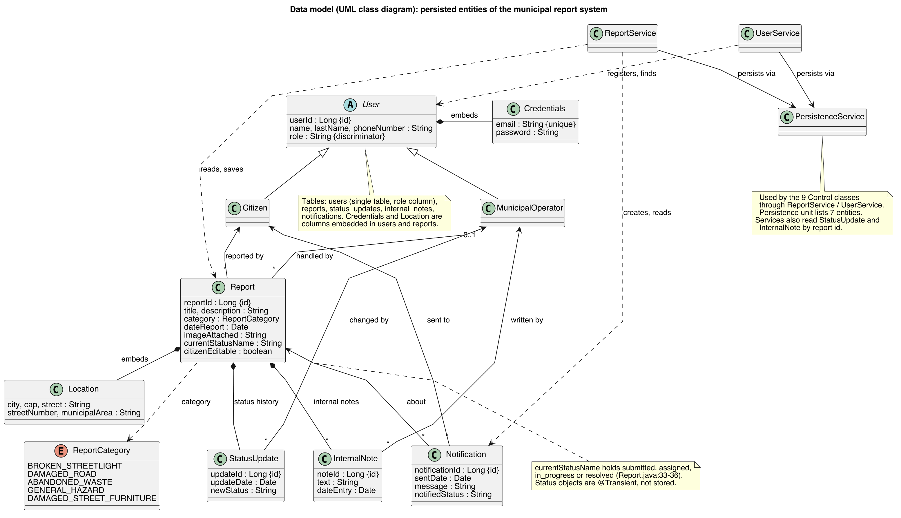
14 nodes, 19 edges; layout issues 6, 0.43 per node (edge-through-text 2, edge-through-node 2, bundled-edges 1, busy 1)
# Data model view: persisted entities of the municipal report system **Takeaway:** every report is one row in `reports` linked to the citizen who filed it, with its location and category stored inline and its history in child rows (status updates, internal notes, notifications). All access goes through `ReportService` and `UserService`. **Stakeholder:** database engineer, about to change the persistence layer. **Detail:** balanced (14 classes: 11 persisted types plus 3 persistence-access classes), with attributes shown because the change is to the schema. Technology names (JPA table and column terms) are used because the audience is engineering. ## How the view answers the concern - **Main entities and relationships:** the seven JPA entities in `persistence.xml:14-20` and their associations. `Credentials` and `Location` are embedded columns, not tables. `ReportCategory` is an enum stored as a string. - **Users, reports, locations, categories:** `User` is a single table with a `role` discriminator, with `Citizen` and `MunicipalOperator` as subclasses. `Report` points to the citizen who reported it and the optional assigned operator. `Location` is embedded in `Report` and `ReportCategory` is its `category` attribute. - **States and state changes:** the current state is the string `currentStatusName` on `Report`. Each change is a `StatusUpdate` row (date, new status, operator), composed by `Report` with cascade and orphan removal. The state objects (`Submitted`, `Assigned`, `InProgress`, `Resolved`) are `@Transient`, so they are not stored. - **Internal notes and notifications:** `InternalNote` holds text, date and author operator, and is composed by `Report`. `Notification` holds date, message and notified status, and points to the report and the citizen recipient. It is not cascaded from `Report`. - **Lifecycle information persisted:** the creation attributes on `Report`, then `StatusUpdate`, `InternalNote` and `Notification` rows added over time. - **Dependents:** `ReportService` and `UserService` use `PersistenceService`, which uses `JpaUtil`. Only these services access the entities. The 9 Control classes reach persistence through them (the 10th, `SystemServicesController`, is a facade). ## Inventory (element: evidence) - `User`: Entity/User.java:20-33 (single table, discriminator `role`: :22-27) - `Credentials`: Credentials.java:9-16; embedded in User.java:47 - `Citizen`: Citizen.java:9-11; `MunicipalOperator`: MunicipalOperator.java:9-11 - `Report`: Report.java:29-113 (citizen :87-89, operator :94-96, notes :101-107, updates :112-113, category :49-51, status string :69-70, `@Transient` status :75-76, `Location` embedded :56-57) - `Location`: Location.java:9-25. `ReportCategory`: ReportCategory.java:8-12 - `StatusUpdate`: StatusUpdate.java:20-54. `InternalNote`: InternalNote.java:20-54 - `Notification`: Notification.java:19-54 (citizen :48-50, report :52-54) - `ReportService` use of Report, Notification, InternalNote and StatusUpdate: ReportService.java:113, 200, 213, 248, 398 - `UserService` use of User: UserService.java:89, 123 - Both services use `PersistenceService`: ReportService.java:21, UserService.java:20 - Persistence unit and entity list: persistence.xml:10-20 ## Omitted on purpose - The status state classes and the `ReportStatus` interface (not persisted). - The 9 Control classes and the Swing GUI classes (shown only as a note). - `JpaUtil`, constructors, getters and private helper methods. - Edges from `ReportService` to `StatusUpdate`, `InternalNote` and `User` (written in a note and merged into the `Report` edge). ## Assumptions - Foreign-key column names come from `@JoinColumn`, but the real database schema (`hbm2ddl update`, persistence.xml:35-36) was not inspected. - Statuses are free strings, so the only status values known are the constants in Report.java:33-36 (no database constraint is visible). - Table names appear in a note rather than as stereotypes, to stay within standard UML. ## Check result Final `puml-check`: 4 warnings (edge-through-text and edge-through-node on long cross-row edges, bundled edges); the first run had 10. Aspect ratio is 1.85 against a target of 1.78, with no tiny text. Image review: the layout was restacked into rows and the view was kept at the better, less wide version. Rendered with PlantUML to `view.png`.
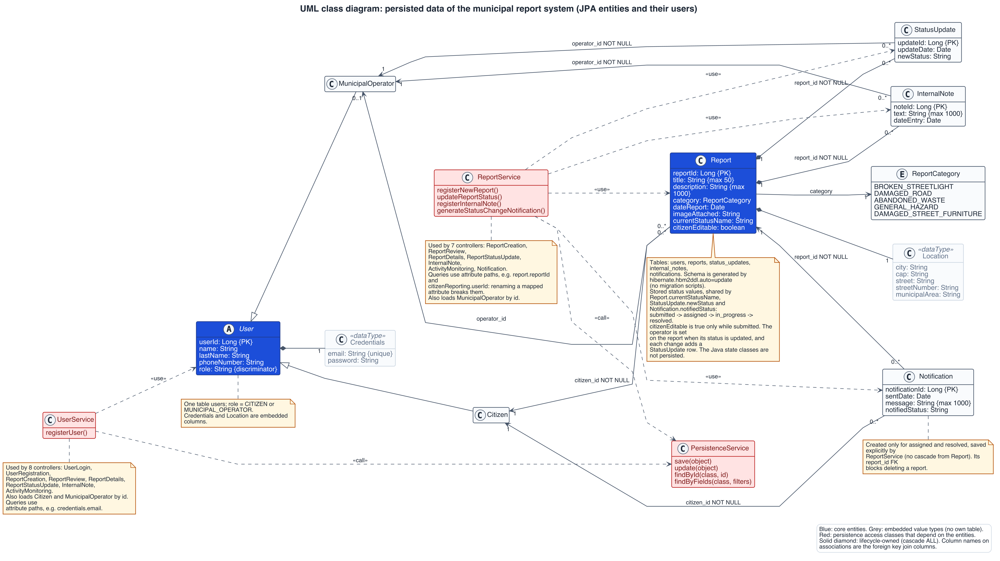
13 nodes, 24 edges; layout issues 10, 0.77 per node (edge-through-text 3, edge-through-node 3, text-on-node 2, bundled-edges 1, busy 1)
critic loop: kept v2 · first version
# Persisted data of the municipal report system (UML class diagram), revision 1
**Takeaway:** the database stores users (Citizen and MunicipalOperator in one table), reports with embedded location and a stored status value, and three child tables (status updates, internal notes, notifications). `ReportService` and `UserService` read and write them through `PersistenceService`.
**Stakeholder:** database engineer, about to change report management. **Detail:** detailed, persistence area only (13 classes, budget 15). The previous version is in `v1/`.
## How the view answers the concern
- **Main entities and relationships:** `User` (abstract) with `Citizen` and `MunicipalOperator`, `Report`, `StatusUpdate`, `InternalNote`, `Notification`. `Location` and `Credentials` are «dataType» embedded columns. Multiplicities follow the JPA mappings. Association labels name the FK join columns, with NOT NULL where the code says so. A note names the tables: users, reports, status_updates, internal_notes, notifications.
- **Information persisted across a report's life:** a note on `Report` gives the stored status values (submitted -> assigned -> in_progress -> resolved), shared by `currentStatusName`, `StatusUpdate.newStatus` and `Notification.notifiedStatus`. `citizenEditable` is true only while submitted. The operator is set on the report at a status update, and every change adds a `StatusUpdate` row. Notifications exist only for assigned and resolved.
- **How the listed concepts relate:** users and operators link to reports through `citizen_id` and `operator_id`. `ReportCategory` is an enumeration used by `Report`. States and state changes are `currentStatusName` and `StatusUpdate`. Internal notes are written by an operator for a report. Notifications go to a citizen about a report.
- **Dependent parts:** `ReportService` and `UserService` have «use» dependencies on the entities they touch and «call» dependencies on `PersistenceService`. Notes list the controllers that use each service. The GUI classes reach the data only through the controllers. Both service notes say that queries use attribute-path strings (`report.reportId`, `credentials.email`), so renaming a mapped attribute breaks them.
- **Schema management:** generated by `hibernate.hbm2ddl.auto=update`, with no migration scripts (note on `Report`).
## Changes from the reviewer's critique
Added the lifecycle values and rules, the table and FK column names, the service-to-entity dependencies, the notification rules (no cascade, FK blocks report deletion), `ReportCategory` as an enumeration, {abstract} `User`, «dataType» on `Location` and `Credentials` with typed attributes, and the hbm2ddl note. The "foreign key arrow" wording is replaced by column names on the associations. The README now says `in_progress`.
## Kept from my version, with reasons
- **Styling stereotypes** `<<accent>>`, `<<alert>>`, `<<muted>>`: the uml-view skill allows them as hidden styling markers, and the legend explains the colours. They do not appear in the render.
- **Constraints** `{max 50}` and similar are informal but short and taken from the column lengths. I removed the `≤` and the `{enum}` text.
- **Entity-to-service edges** are not drawn for every case: `ReportService` to `MunicipalOperator`/`User` and `UserService` to `Citizen`/`MunicipalOperator` are in the service notes only. Drawing them raised the edge count to 27 and made the render unreadable.
## Omitted on purpose
Controller and GUI classes (named in notes only), the `ReportStatus` state classes (not persisted), `JpaUtil`, getters and setters.
## Assumptions
- Status values come from the constants in `Report.java:33-36`. No status table exists.
- The category is stored by name (`@Enumerated(STRING)`).
- Controller usage is derived from fields of type `ReportService` and `UserService`.
## Check result
- `check_inventory.py`: 0 issues, 0 unbacked items (13 elements, 20 relations).
- `puml-check`: 10 warnings (v1 had 4). They are tiny text (7px when scaled to 1200 px wide), two labels on a node, three edges through text, three edges over a node, and one bundled-edges warning at Report.
The aspect ratio now matches 16:9. I viewed the PNG: it is readable at full size but dense. The warnings come from the extra content the reviewer asked for, which I kept.
“I am an integration tester, and I would like a dynamic view of the user registration functionality.”
I am an integration tester. I need to test the user registration functionality and understand which system components are involved and how they interact.
| entity of interest | application for booking study-room seats, with student and librarian users |
|---|---|
| stakeholder | integration tester |
| perspective | testing the user registration feature end to end (detail level: balanced) |
| concern | control_flow |
| concern details |
|
| aspect | behavioural |
| viewpoint | dynamic |
| model kind | UML sequence diagram |
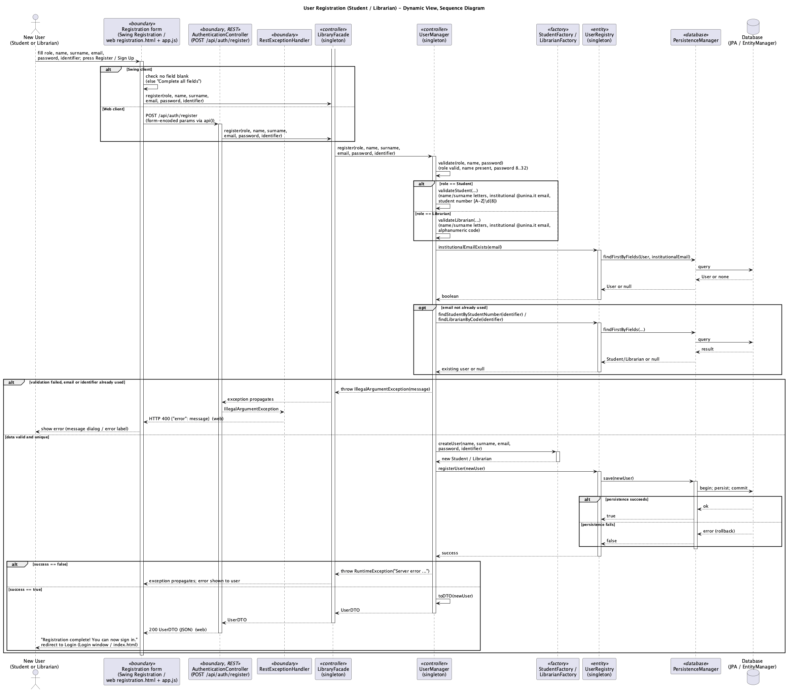
0 nodes, 0 edges; layout issues 10 (group-label-on-lifeline 4, message-crosses-lifeline 3, group-label-crosses-lifeline 2, message-spans-lifelines 1)
# View: User Registration - Dynamic View (UML sequence diagram) **Stakeholder:** integration tester. **Concern:** control flow of user registration: which components take part and how they interact. **Aspect/viewpoint:** behavioural / dynamic. `view.puml` shows the end-to-end flow of registering a Student or a Librarian, derived from the code in `JavaProject/src/main`. ## How it addresses the concern - **Components involved:** the participants are the registration client (Swing `Registration`, or web `registration.html`/`app.js`), `AuthenticationController` (`POST /api/auth/register`), `RestExceptionHandler`, `LibraryFacade`, `UserManager`, `StudentFactory`/`LibrarianFactory`, `UserRegistry`, `PersistenceManager` and the database. Stereotypes give each one's layer. - **How they interact:** messages follow the call chain: UI -> (controller, web only) -> `LibraryFacade.register` -> `UserManager.register` -> validation -> uniqueness checks via `UserRegistry`/`PersistenceManager` -> factory creation -> `registerUser`/`save` -> `UserDTO` returned. The Swing client calls the facade directly; the web client goes through REST. - **Control flow / branches for test design:** `alt`/`opt` fragments cover the Student vs Librarian validation, invalid data or duplicate email/identifier (`IllegalArgumentException`, mapped to HTTP 400 by `RestExceptionHandler`), persistence failure (`save` returns false, `RuntimeException`), and success (DTO returned, user told to sign in and sent to login). Scope note: login and other use cases are out of scope. The Swing client's exception path is shown only as propagation to the UI error dialog.
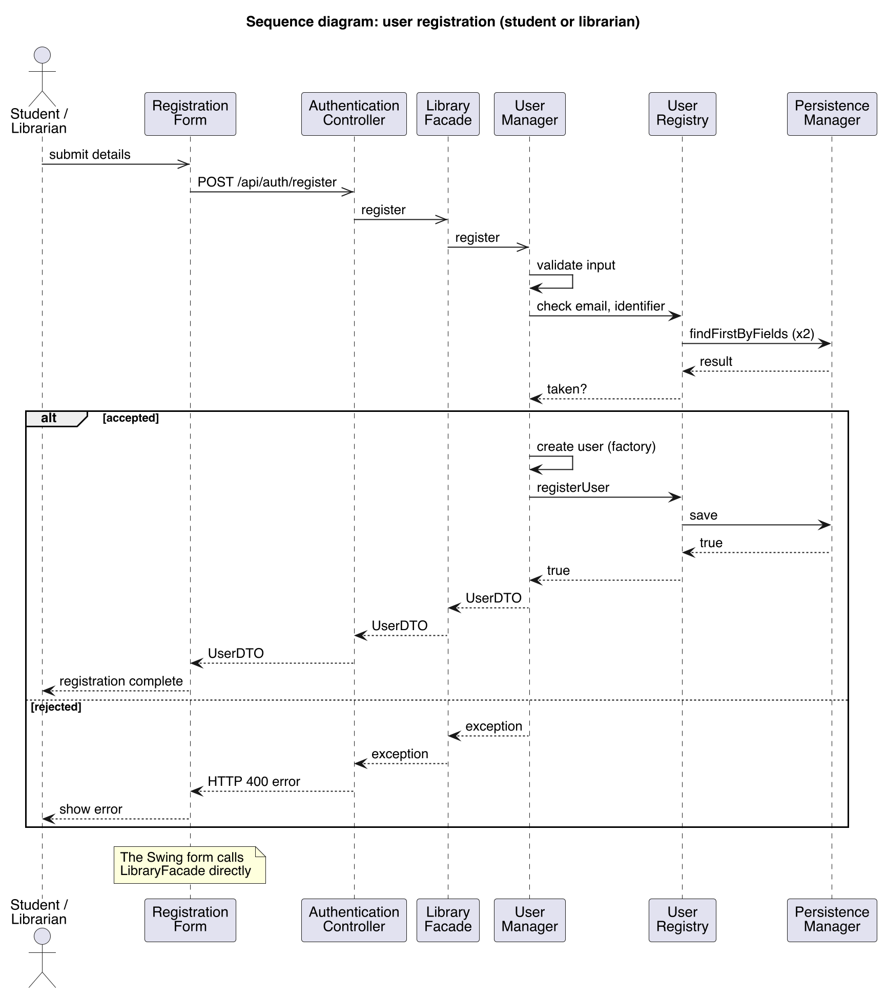
0 nodes, 0 edges; layout issues 1 (group-label-on-lifeline 1)
# Sequence diagram: user registration **Takeaway:** a registration request travels Registration Form → Authentication Controller → Library Facade → User Manager, which validates, checks uniqueness through User Registry / Persistence Manager, builds a Student or Librarian and saves it; any rule violation comes back as an exception shown to the user as an error. **Stakeholder:** integration tester (end-to-end registration). **Detail:** balanced (one feature), 7 lifelines, ~18 messages; engineering wording (HTTP path, class names). Files: `view.puml` (source), `view.png` (render). ## How the view addresses the concern - **System components involved:** the 7 lifelines: user (Student/Librarian), Registration Form, Authentication Controller, Library Facade, User Manager, User Registry, Persistence Manager. - **How they interact / control flow:** main flow top to bottom (submit, POST, facade delegation, validation, uniqueness check, factory creation, save, UserDTO back); one `alt` shows the error path (IllegalArgumentException mapped to HTTP 400, RuntimeException if saving fails). ## Inventory (element → evidence) | Element | Evidence | |---|---| | Registration Form (web) | `JavaProject/src/main/resources/static/registration.html:53-70` (POST `/auth/register`, alert, show error) | | Registration Form (Swing) | `boundary/Swing/Registration.java:116-141` (calls `LibraryFacade` directly) | | Authentication Controller | `boundary/SpringBoot/AuthenticationController.java:16-31` (`POST /api/auth/register`) | | Error mapping to HTTP 400 | `boundary/SpringBoot/RestExceptionHandler.java:19-22` | | Library Facade | `controller/LibraryFacade.java:37-40` | | User Manager (validate, uniqueness, factory, save, DTO) | `controller/UserManager.java:65-97` | | Factory (Student/Librarian) | `controller/factory/StudentFactory.java`, `LibrarianFactory.java` (collapsed into a User Manager self-message) | | User Registry | `entity/UserRegistry.java:26-67` | | Persistence Manager | `database/PersistenceManager.java:19-43` (`save`, returns false on failure) | ## Omitted on purpose Database/JPA internals, entities, DTO fields, login and other use cases, individual validation rules (collapsed to "validate input"), the two lookups (collapsed, "x2"), and the facade/controller return hops in the error path are shown but not annotated further. ## Assumptions - The two uniqueness checks (email, identifier) are drawn as one message pair; in code they are separate calls (`UserManager.java:77-84`). - On save failure `UserManager` throws `RuntimeException`, which `RestExceptionHandler` does not map (only IllegalArgument/IllegalState/Security); so the HTTP status for that case is unconfirmed. The `alt` shows "HTTP 400" only for rule violations. - The Swing form path bypasses the controller; noted in the diagram, not drawn separately. ## Check result Final `puml-check`: 0 warnings other than `aspect` (sequence diagrams are tall; 866x976), plus 1 info. Image review changed the error path from a trailing `alt` to an `alt accepted / else rejected`, and collapsed repeated lookups to stay under the message budget.
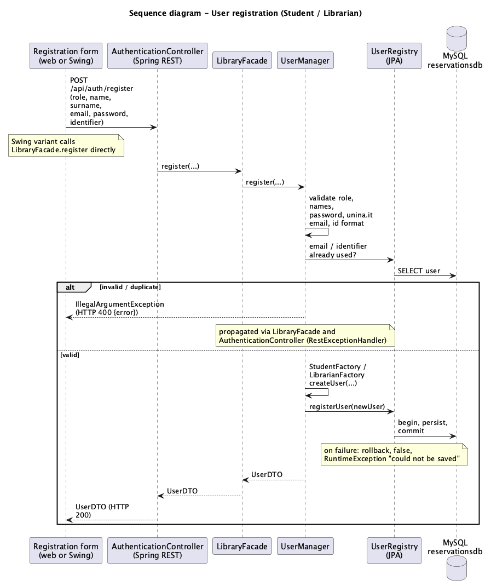
0 nodes, 0 edges; layout issues 4 (group-label-crosses-lifeline 1, message-crosses-lifeline 1, group-label-on-lifeline 1, message-spans-lifelines 1)
# Sequence diagram – User registration (view.puml / view.png) **Takeaway:** a registration request travels Registration form → AuthenticationController → LibraryFacade → UserManager → UserRegistry → MySQL; UserManager validates, checks duplicates, creates the Student or Librarian through a factory and persists it, and returns a UserDTO or an error that is mapped to HTTP 400. **Stakeholder:** integration tester (end-to-end test of registration). **Detail:** balanced (one feature), engineering wording (REST path, JPA, MySQL). 6 lifelines, 11 messages (slightly under the 12 budget). ## Concern - *System components involved:* the six lifelines, one per architectural role (inventory below). - *How they interact / control flow:* the top-to-bottom messages show the call chain, the validation, duplicate check, creation, persistence and return path. The `alt` shows the error path (invalid input or duplicate -> IllegalArgumentException -> HTTP 400); the note on UserRegistry gives the save-failure path. ## Inventory (element -> evidence) | Element | Evidence | |---|---| | Registration form (web) | `resources/static/registration.html:53-66` (POST `/auth/register`, then redirect to login) | | Registration form (Swing) | `boundary/Swing/Registration.java:116-141` (calls `LibraryFacade.register` directly) | | AuthenticationController | `boundary/SpringBoot/AuthenticationController.java:15-31` (`POST /api/auth/register`) | | LibraryFacade | `controller/LibraryFacade.java:37-40` | | UserManager (validate, duplicates, factory, save) | `controller/UserManager.java:65-97` | | StudentFactory / LibrarianFactory | `controller/factory/StudentFactory.java:8-18`, `UserManager.java:89` | | UserRegistry | `entity/UserRegistry.java:26-67` | | PersistenceManager save (merged into UserRegistry lifeline) | `database/PersistenceManager.java:19-37` (begin/persist/commit, rollback -> false) | | MySQL reservationsdb | `resources/META-INF/persistence.xml:21` | | HTTP 400 mapping | `boundary/SpringBoot/RestExceptionHandler.java:18-21` | | Test entry point (calls the facade) | `src/test/.../RegistrationTest.java:53-90` | ## Omitted on purpose UserDTO/User entities, `app.js` helper, PersistenceManager as separate lifeline, individual validation rules, the repeated registry lookups (email, student number, librarian code), the Student/Librarian role branch in detail, the login flow. ## Assumptions - The Swing and web forms are shown as one lifeline; the Swing path skips AuthenticationController (note in view). - Error replies are drawn as one message from UserManager to the form, with a note that they pass through LibraryFacade and AuthenticationController. - No notification or e-mail step exists in registration code (none found). ## Check Final puml-check: 0 errors; 2 warnings (alt label and one error message cross a lifeline because the form is far left of UserManager) – accepted, as shortening further lost meaning. Image review: layout readable, no overlaps; no changes needed after the first image.
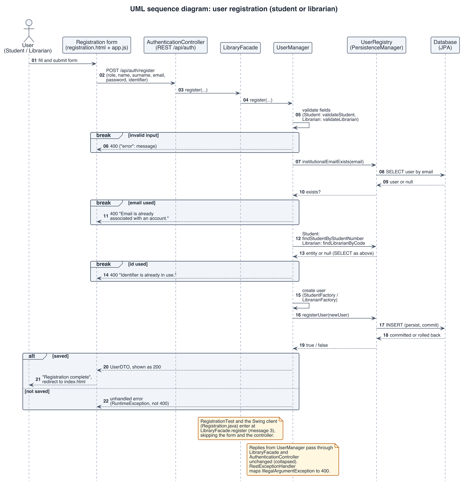
0 nodes, 0 edges; layout issues 2 (group-label-on-lifeline 1, message-spans-lifelines 1)
critic loop: kept v2 · first version
# UML sequence diagram: user registration **Takeaway:** a registration request goes form -> REST controller -> facade -> `UserManager` (validate, email check, identifier check, create, persist) -> `UserRegistry` -> database. Each check exits early with an error, and a failed save raises an unmapped `RuntimeException`. **Stakeholder:** integration tester, testing registration end to end. **Level:** detailed (7 lifelines, 22 messages, within the 25-message budget). Wording is technical (endpoint, class and method names). Files: `view.puml`, `view.png`, `inventory.json` (evidence for every element and relation). The previous version is in `v1/`. ## How it addresses the concern - **Components involved:** the lifelines are the user, registration form (`registration.html` + `app.js`), `AuthenticationController`, `LibraryFacade`, `UserManager`, `UserRegistry` (with `PersistenceManager`) and the JPA database. - **How they interact:** - Messages 1-4 carry the call down. - Message 5 validates the fields, by role (`validateStudent` or `validateLibrarian`). A `break [invalid input]` returns 400 (06). - Messages 7-10 look up the email, and a `break [email used]` returns 400 (11). - Messages 12-13 look up the identifier by role (`findStudentByStudentNumber` or `findLibrarianByCode`), and a `break [id used]` returns 400 (14). - Messages 15-19 create the user through its factory and persist it. - An `alt` then shows the outcome: success returns `UserDTO` and the "Registration complete" dialog (20-21). A failed save returns an unhandled `RuntimeException`, not a 400 (22). - **Test entry point:** a note says `RegistrationTest` and the Swing client enter at `LibraryFacade.register`, skipping the form and the controller. ## Changes after review (critique-1) - The single `alt` after the checks is replaced by one `break` fragment per early exit. The unconditional "not found" reply is gone. - The email and identifier lookups are separate, each with its own error message. The role branch is shown in the message text. - The save-failure path is added. - Exceptions are no longer drawn as dashed "propagated" replies. Each exit is a labelled reply carrying the HTTP result. - Activation bars are removed, so none run past the end. The actor is renamed "User (Student / Librarian)". Database replies are added. **Kept as it was, with reasons:** - The reviewer asked for reply hops through the facade and controller. They only pass the result along (`AuthenticationController.java:29-30`, `LibraryFacade.java:39`), so I collapsed them into one note. This keeps the view within 25 messages. It also makes five replies span two lifelines, which `puml-check` reports as an info line. - Only the first lookup shows its database round trip. The identifier lookup reply says "SELECT as above", which is a shortcut for the budget (both go through `findFirstByFields`). ## Omitted on purpose `RestExceptionHandler` as a lifeline (mentioned in a note), the factories, DTO and entity classes (collapsed into `UserManager`), and other `LibraryFacade` operations. ## Assumptions - A `RuntimeException` is not handled by `RestExceptionHandler` (`RestExceptionHandler.java:19-28`). The exact HTTP status then depends on Spring's default handling, which is not in the code. The view says "not 400" and does not name a status (unconfirmed). - Replies from the facade and controller are assumed to pass through unchanged. ## Check results - `puml-check`: no overlaps and no group-label warnings. The remaining warning is `aspect` (ratio 0.97 vs 1.78: a tall sequence diagram that cannot be reshaped without splitting it). There are two info lines: a group label on a lifeline, and five replies spanning two lifelines. - `check_inventory.py`: exit 0, 0 issues, 7 elements, 7 relations.
“I am an integration tester. I need to design integration tests for the user registration functionality. Before defining the tests, I need to understand the main components involved in registration, their responsibilities, and how they interact when a new user creates an account. I also need to identify the main integration points that should be exercised during the tests.”
| entity of interest | application for booking study-room seats, with student and librarian users |
|---|---|
| stakeholder | integration tester |
| perspective | designing integration tests for user registration (detail level: balanced) |
| concern | control_flow, connectivity |
| concern details |
|
| aspect | behavioural, structural |
| viewpoint | dynamic |
| model kind | UML sequence diagram |
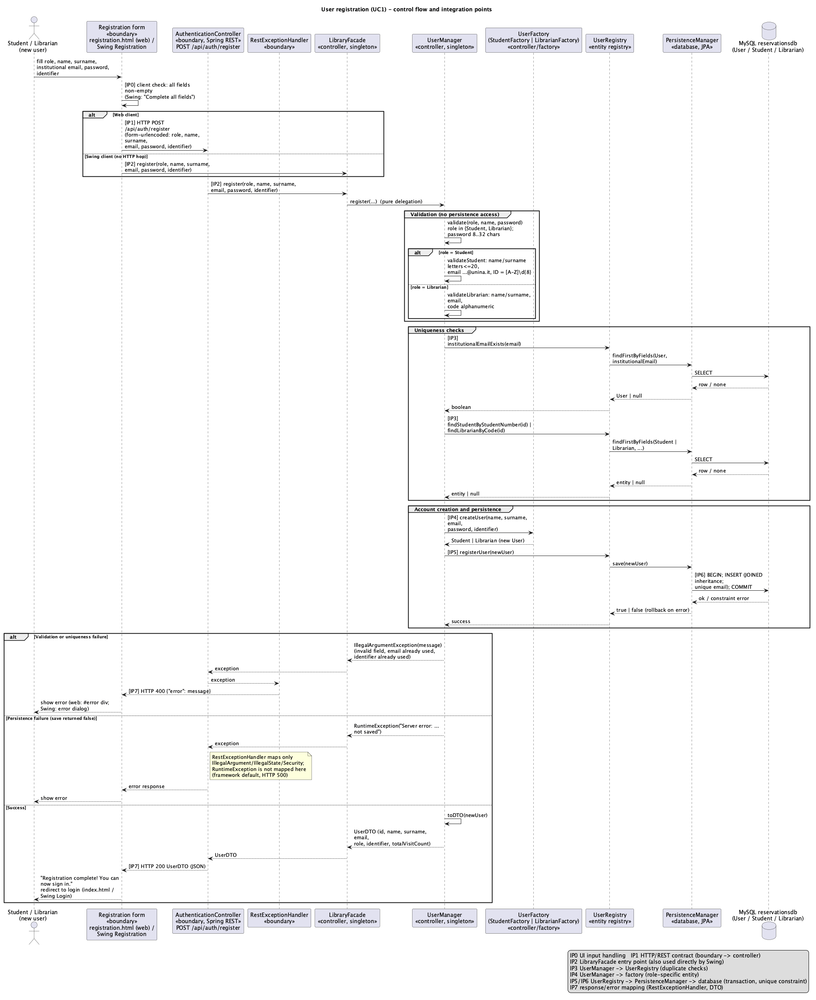
0 nodes, 0 edges; layout issues 9 (group-label-on-lifeline 4, message-crosses-lifeline 3, group-label-crosses-lifeline 1, message-spans-lifelines 1)
# View: User registration (UC1) - UML sequence diagram Viewpoint: dynamic. Model kind: UML sequence diagram. Stakeholder: integration tester. Source: `JavaProject/src/main` (AuthenticationController, LibraryFacade, UserManager, StudentFactory/LibrarianFactory, UserRegistry, PersistenceManager, registration.html, Swing `Registration`). ## What it shows The runtime interaction when a new Student or Librarian creates an account: from the registration form (web page or Swing client), through the REST controller (web only), the facade, the `UserManager` (validation, uniqueness checks, role-specific creation), the `UserRegistry` and `PersistenceManager`, down to the MySQL database. The success path and the two error paths (validation/uniqueness -> HTTP 400; persistence failure) are shown as alternatives. ## How it addresses the concern - **Main components and responsibilities (structural/behavioural):** each participant is labelled with its role. The form collects input; `AuthenticationController` exposes `POST /api/auth/register`; `LibraryFacade` is the single entry point and delegates; `UserManager` validates and orchestrates; the factories create the Student or Librarian; `UserRegistry` provides lookups and save; `PersistenceManager` runs JPA transactions; `RestExceptionHandler` maps errors to HTTP. - **Control flow:** the message order shows validation first (no data access), then duplicate checks on email and identifier, then creation and persistence, then the DTO or error returned to the user. - **Connectivity / integration points:** markers IP0-IP7 (explained in the legend) identify the interfaces to exercise: the HTTP contract (IP1), the facade entry shared by web and Swing (IP2), manager-to-registry checks (IP3), factory (IP4), registry-to-persistence-to-database with the unique-email constraint (IP5/IP6), and response/error mapping (IP7). ## Observations useful for test design - Swing calls `LibraryFacade` directly, so the HTTP layer is only covered via the web client or REST calls. - A `RuntimeException` from a failed save is not handled by `RestExceptionHandler` (only IllegalArgument/IllegalState/Security), so the response then depends on the framework default. - Passwords are stored and compared in plain form in the entity (no hashing in the registration path).
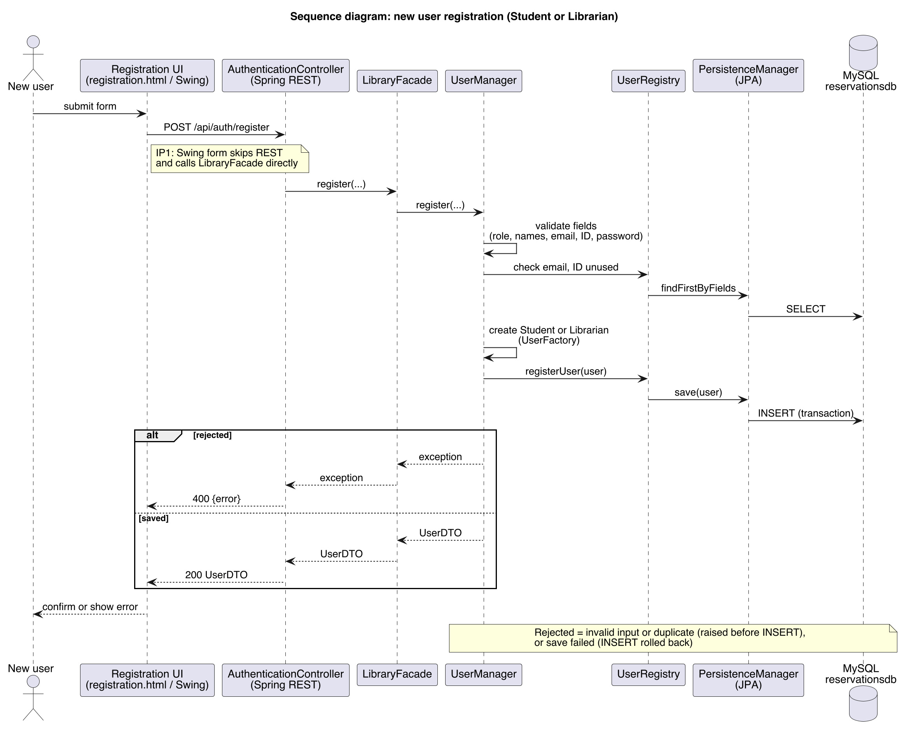
0 nodes, 0 edges; layout issues 1 (group-label-on-lifeline 1)
# Sequence diagram: new user registration
**Takeaway:** a registration request passes through a fixed chain, UI → AuthenticationController → LibraryFacade → UserManager → UserRegistry → PersistenceManager → MySQL. All validation and the duplicate checks are in UserManager, so the tester can exercise each hop and each failure mode on that path.
**Stakeholder:** integration tester. **Detail level:** balanced (one feature; 8 lifelines counting the actor, 12 forward messages plus replies). Wording is technical (REST, JPA, MySQL) because the reader is an engineer.
## How it answers the concern
| Concern | Where in the view |
|---|---|
| Main components and responsibilities | The lifelines. Responsibilities are given in the inventory below. The self-messages on UserManager show validation and user creation. |
| How they interact | The message order from "submit form" to the reply. The `alt` shows the rejected and saved outcomes. |
| Integration points to exercise | See the list below; IP1 is marked in the diagram. |
Integration points (the numbering is mine, not from the code):
- **IP1 UI → AuthenticationController:** `POST /api/auth/register`, form-encoded, with `role, name, surname, email, password, identifier`. The Swing `Registration` form bypasses REST and calls `LibraryFacade` directly (`Registration.java:116-135`).
- **IP2 AuthenticationController → LibraryFacade → UserManager:** the facade only delegates.
- **IP3 UserManager → UserRegistry → PersistenceManager → MySQL, read:** the duplicate email and identifier checks.
- **IP4 The same chain, write:** the transactional INSERT. `save` returns false on failure, which UserManager turns into a `RuntimeException`.
- **IP5 Error mapping:** `RestExceptionHandler` maps `IllegalArgumentException` to HTTP 400 `{error}`.
## Inventory (element → evidence)
- Registration UI: `static/registration.html:52-68` posts through `app.js` `api()`; `boundary/Swing/Registration.java:116`.
- AuthenticationController (REST endpoint, delegates to the facade): `boundary/SpringBoot/AuthenticationController.java:22-31`.
- LibraryFacade (single entry to the controllers): `controller/LibraryFacade.java:37-40`.
- UserManager (validates, checks duplicates, creates the user via `StudentFactory`/`LibrarianFactory`, builds the DTO): `controller/UserManager.java:65-97`.
- UserRegistry (user lookups and save): `entity/UserRegistry.java:26-67`.
- PersistenceManager (JPA transaction and queries): `database/PersistenceManager.java:19-43, 172`.
- MySQL `reservationsdb`: `META-INF/persistence.xml:21`. Unique constraint on the email column: `entity/User.java:21`.
- Error mapping: `boundary/SpringBoot/RestExceptionHandler.java:19-28`.
- Existing tests that call the facade: `RegistrationTest.java`.
## Omitted on purpose
- `UserDTO`, `JpaUtil` and the Spring/Swing glue.
- The individual validation rules (field formats, `@unina.it` email, password 8-32 characters). They are collapsed into one self-message.
- The repeated email and identifier lookups. They are collapsed into one request (the code does two SELECTs, or one for the email and one for the identifier).
- Login and the other use cases.
## Assumptions
- The `alt` is drawn after the INSERT for readability. Invalid-input and duplicate rejections actually happen before the INSERT, and a failed save happens at the INSERT; a note on the diagram says so.
- A save failure is returned as a `RuntimeException`. `RestExceptionHandler` has no handler for it, so the HTTP result is whatever Spring's default does (unconfirmed). The diagram says "error response" generically.
- The `@unina.it` email rule and the identifier formats are enforced only in `UserManager`; the web form was not checked for client-side rules.
## Check result
- `puml-check` (16:9 target): 1 warning, `aspect`. Sequence diagrams are tall, and it would be cleared only by splitting.
- An earlier version had 5 lifeline-crossing warnings; routing the replies through the facade cleared them.
- Image review: the diagram reads top to bottom with no overlaps. I merged the save-failure branch into one `alt` and added a note to explain it.
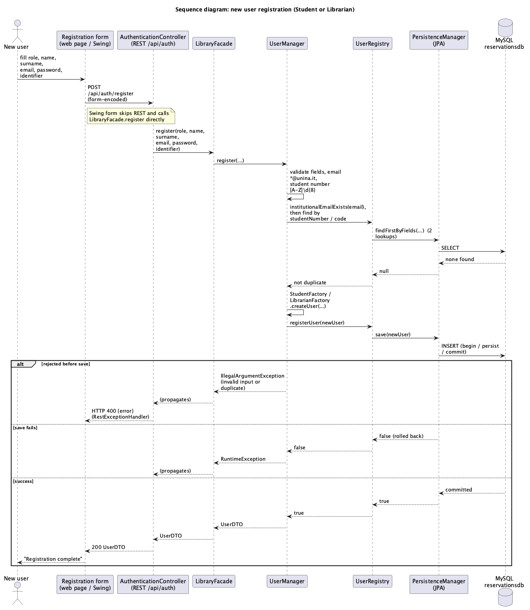
0 nodes, 0 edges; layout issues 3 (group-label-on-lifeline 2, group-label-crosses-lifeline 1)
# Registration sequence view (integration tester) **Takeaway:** a registration request travels form → AuthenticationController (REST) → LibraryFacade → UserManager (validate, duplicate checks, factory) → UserRegistry → PersistenceManager → MySQL, and every failure comes back as an exception that the REST layer maps to HTTP 400. Stakeholder: integration tester. Detail level: balanced (one feature), engineering wording (REST, JPA, MySQL). ## Concern coverage - **Main components and responsibilities:** the seven lifelines and their labels; responsibilities per inventory below. - **Interaction on account creation:** main flow top to bottom (validate, 2 duplicate lookups collapsed into one message, factory, save, INSERT) plus the `alt` for rejection, save failure and success. - **Integration points to exercise:** (1) form → `POST /api/auth/register`; (2) controller → LibraryFacade → UserManager; (3) UserManager → UserRegistry duplicate lookups; (4) UserRegistry → PersistenceManager → MySQL (SELECT, INSERT, rollback); (5) exception → HTTP 400 mapping. The Swing form enters at (2), bypassing REST (note in view). ## Inventory (element → evidence; paths under JavaProject/src/main) - Registration form (web): resources/static/registration.html:53-66 (api helper resources/static/app.js:41); Swing: java/it/unina/reservations/boundary/Swing/Registration.java:116-141 - AuthenticationController: boundary/SpringBoot/AuthenticationController.java:22-31 - RestExceptionHandler (400 mapping): boundary/SpringBoot/RestExceptionHandler.java:19-22 - LibraryFacade.register: controller/LibraryFacade.java:37-40 - UserManager.register (validate, duplicates, factory, save): controller/UserManager.java:65-97; rules :52-58, :26, :29 - StudentFactory/LibrarianFactory: controller/factory/StudentFactory.java:8-18 - UserRegistry: entity/UserRegistry.java:26-28, :37-67 - PersistenceManager.save: database/PersistenceManager.java:19-43 - MySQL reservationsdb, unit reservationsPU: resources/META-INF/persistence.xml:7,21 - Existing tests via the facade: src/test/.../RegistrationTest.java:53+ ## Omitted on purpose Factories as own lifelines (a self-call), JpaUtil, entities/DTO details, login, notifications (registration sends none). ## Assumptions - DB lookups return nothing in the success path; the lookup/INSERT ordering is drawn before the `alt`, whose first branch is raised before the INSERT. - Unique email constraint (entity/User.java:21) is not drawn; a violation would surface as save failure. ## Check puml-check: no lifeline crossings, remaining output is info-level group-label notes only. Image review: fixed messages that jumped over LibraryFacade and clarified the failure branch label.
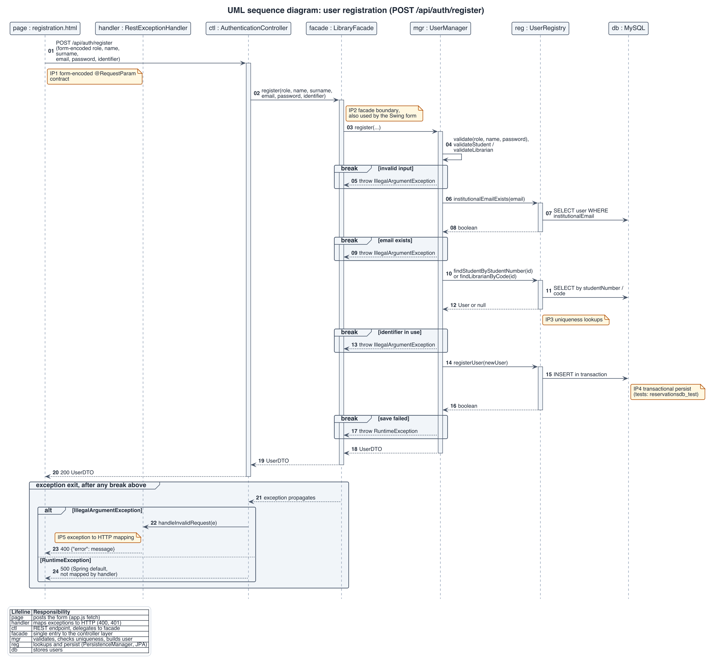
0 nodes, 0 edges; layout issues 2 (group-label-on-lifeline 1, message-spans-lifelines 1)
critic loop: kept v2 · first version
# UML sequence diagram: user registration
**Stakeholder:** integration tester. **Detail level:** detailed for this one flow (7 lifelines, 24 messages): the tester needs every outcome the tests must cover, not only the happy path.
**Takeaway:** registration is a call chain page → `AuthenticationController` → `LibraryFacade` → `UserManager` → `UserRegistry` → MySQL, in which `UserManager` has four separate exits (invalid input, email in use, identifier in use, save failure). The first three become HTTP 400 through `RestExceptionHandler`; the save failure is not mapped and ends as Spring's default 500.
## How the view answers the concern
- **Components and responsibilities:** seven lifelines named `alias : Type` as in the code, with a one-line responsibility for each in the legend (also in `inventory.json`). `RestExceptionHandler` now has its own lifeline.
- **Interaction:** messages 01–20 are the success path in code order: validate (04), email lookup (06–08), identifier lookup (10–12, `findStudentByStudentNumber` for a student, `findLibrarianByCode` for a librarian), `registerUser` (14–16), then the `UserDTO` replies and 200. Each `break` fragment is an early exit that throws before any later step runs (invalid input happens before any DB access). The closing group shows how exceptions leave: `IllegalArgumentException` → handler → 400 `{"error"}`; `RuntimeException` → 500, handler not involved.
- **Integration points (numbered notes in the diagram):** IP1 form-encoded `@RequestParam` contract; IP2 facade boundary shared with the Swing form; IP3 uniqueness lookups; IP4 transactional INSERT (tests run against `reservationsdb_test`, `src/test/resources/META-INF/persistence.xml:22`); IP5 exception-to-HTTP mapping.
`inventory.json` holds the evidence. `check_inventory.py`: 0 issues, 0 unbacked, 7 elements, 11 relations. `puml-check`: one warning, `aspect` (1585x1477, too tall for 16:9). I kept it: the height comes from the four exits the reviewer asked for, and splitting them across pages would hide the order of checks. One info note remains about the `alt` label position.
## Omitted on purpose
Factories (`UserManager.java:89-90`; creating the object is not an integration point, so the earlier self-message is gone), `UserDTO`, entities, `JpaUtil`, login. The Swing form (`Registration.java:134`) is covered by IP2 only; it has no lifeline.
## Assumptions / unconfirmed
- The 500 for the unmapped `RuntimeException` is Spring's default behaviour, inferred from `RestExceptionHandler` handling only `IllegalArgumentException`, `IllegalStateException` and `SecurityException`; not run.
- `LibraryFacade` has no handling code, so exceptions simply propagate (message 21).
- The exception arrows are drawn as dashed replies labelled `throw ...`, since UML sequence diagrams have no exception arrow.
## Changes from v1 (kept in `v1/`) and why
Followed the reviewer: added the `RestExceptionHandler` lifeline; replaced the single `alt` with ordered `break` exits following `UserManager.register`; added the save-failure/500 case; added replies from `UserRegistry`; real operation names; `name : Type` lifelines; integration-point notes and responsibility legend; the Swing note became part of IP2 (attached to the facade); dropped the factory self-message. Not adopted: a separate reply from MySQL to `UserRegistry` (the results are shown on the `reg` → `mgr` replies, to stay within the lifeline/message size), and MySQL stays a plain lifeline with no stereotype. The reviewer's claim that the test database is `reservationsdb_test` was checked in the code and is correct.
“I am an integration tester. I need to design integration tests for the user registration functionality. Before defining the tests, I need to understand the high-level architecture supporting this functionality. I want to identify the main components involved in the registration process, their responsibilities, and the interactions and dependencies among them. In particular, I need to understand which components handle the registration request, validate the user's personal information and selected role, manage role-specific data such as the student ID or librarian identifier, verify the validity and uniqueness of the account, and persist the newly created user. I also need to understand how these components collaborate when invalid or already existing user data is provided, so that I can identify the main integration points and interactions that should be covered by the tests.”
| entity of interest | application for booking study-room seats, with student and librarian users |
|---|---|
| stakeholder | integration tester |
| perspective | designing integration tests for user registration, at the level of the architecture (detail level: balanced) |
| concern | control_flow, connectivity |
| concern details |
|
| aspect | behavioural, structural |
| viewpoint | dynamic |
| model kind | UML sequence diagram |
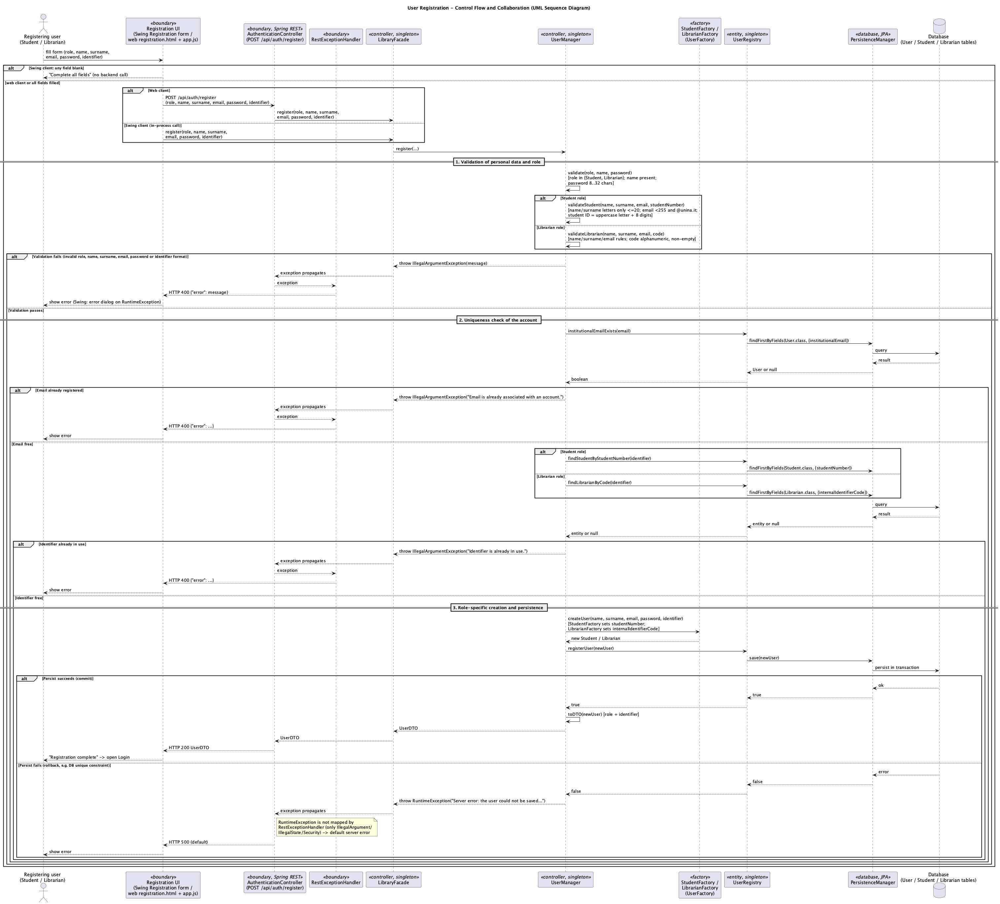
0 nodes, 0 edges; layout issues 12 (group-label-crosses-lifeline 5, group-label-on-lifeline 5, message-crosses-lifeline 1, message-spans-lifelines 1)
# User registration – dynamic view (UML sequence diagram)
`view.puml` shows the runtime control flow of user registration (UC1) for a Student or Librarian, derived from the code:
`Registration` (Swing) / `registration.html` + `app.js` → `AuthenticationController` (`POST /api/auth/register`) → `LibraryFacade` → `UserManager` → `StudentFactory`/`LibrarianFactory` → `UserRegistry` → `PersistenceManager` → database. `RestExceptionHandler` maps failures to HTTP responses.
## How it addresses the concern
- **Main components and responsibilities**: one lifeline per component, with stereotypes. Boundary receives the request (UI/REST controller), the facade delegates, `UserManager` validates and orchestrates, the factories build the role-specific user, `UserRegistry` checks existence and registers, `PersistenceManager` handles JPA persistence.
- **Who does what**:
- *Handles the request*: `AuthenticationController` (web) or the Swing form via `LibraryFacade`.
- *Validates personal data and role*: `UserManager.validate`, `validateStudent`, `validateLibrarian` (section 1).
- *Role-specific data*: student ID format (letter + 8 digits) vs. librarian code (alphanumeric); `StudentFactory` / `LibrarianFactory` set `studentNumber` / `internalIdentifierCode`.
- *Validity and uniqueness*: `UserRegistry` lookups by email and by identifier (section 2).
- *Persistence*: `UserRegistry.registerUser` → `PersistenceManager.save` (section 3).
- **Invalid or existing data**: `alt` branches show validation failure, duplicate email, duplicate identifier (all `IllegalArgumentException` → HTTP 400 `{"error"}` via `RestExceptionHandler`, or an error dialog in Swing), and persistence failure (`RuntimeException`, which has no dedicated handler, so default HTTP 500).
- **Integration points to cover**: UI/REST ↔ `LibraryFacade`; `UserManager` ↔ `UserRegistry`; `UserManager` ↔ factories; `UserRegistry` ↔ `PersistenceManager` ↔ DB; exception propagation to `RestExceptionHandler`/UI.
Notes: the Swing client blocks blank fields locally before calling the backend. Uniqueness is checked (email first, then identifier) before persisting; DB unique constraints are a second line of defense that surfaces as the persistence failure branch.
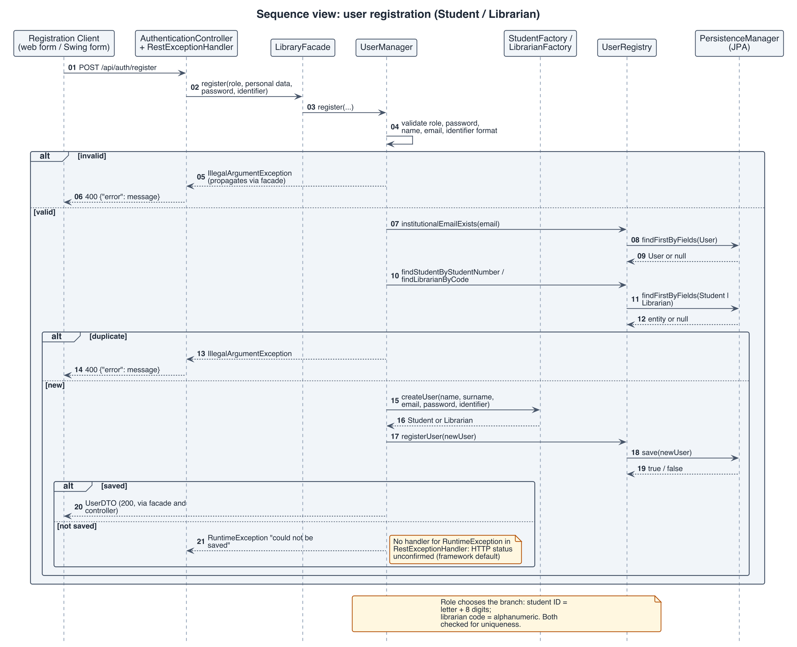
0 nodes, 0 edges; layout issues 2 (group-label-on-lifeline 1, message-spans-lifelines 1)
# Sequence view: user registration (Student / Librarian)
**Takeaway:** A registration request goes Client → AuthenticationController → LibraryFacade → UserManager. UserManager validates the role and personal data, checks uniqueness through UserRegistry/PersistenceManager, builds the role-specific user with a factory, and persists it. Invalid or duplicate data ends in an `IllegalArgumentException` that RestExceptionHandler maps to HTTP 400.
Stakeholder: integration tester. Detail level: balanced-to-detailed for this one feature (7 lifelines, 21 messages with 3 `alt` fragments), because the concern asks for the invalid and duplicate paths and the integration points.
Files: `view.puml` (source), `view.png` (render).
## How the view answers the concern
| Concern | Where |
|---|---|
| Handles the request | Messages 1–3: AuthenticationController (`POST /api/auth/register`) → LibraryFacade → UserManager. The Swing form skips the controller and calls LibraryFacade directly. |
| Validates personal data and role | Message 4 (UserManager): role, password length, name, surname, email (unina.it), identifier format. |
| Role-specific data (student ID / librarian code) | Message 4 and the bottom note (student ID = letter + 8 digits, librarian code alphanumeric); messages 10–11 (role picks the lookup); message 15 (StudentFactory or LibrarianFactory sets the identifier). |
| Validity and uniqueness | Messages 7–12: email check, then identifier check, through UserRegistry → PersistenceManager. |
| Persists the new user | Messages 17–19: `registerUser` → `save` (JPA persist in a transaction). |
| Invalid data | `alt invalid` (5–6): 400 `{"error": message}`. |
| Existing data | `alt duplicate` (13–14): same 400 response. |
| Save failure | `alt not saved` (21): `RuntimeException`. |
| Integration points to test | Client↔Controller (HTTP and error JSON), Controller↔Facade↔UserManager, UserManager↔UserRegistry, UserRegistry↔PersistenceManager↔database, UserManager↔factories. |
## Inventory (element → evidence)
- Registration Client: `static/registration.html:53-57` (POST `/auth/register`); `boundary/Swing/Registration.java:116-134`.
- AuthenticationController: `boundary/SpringBoot/AuthenticationController.java:22-31`.
- RestExceptionHandler (merged into the controller lifeline): `RestExceptionHandler.java:19-28` (IllegalArgumentException → 400).
- LibraryFacade: `controller/LibraryFacade.java:37-39`.
- UserManager: `controller/UserManager.java:65-97` (validation 52-58, 173-221; uniqueness 77-87).
- StudentFactory / LibrarianFactory: `controller/factory/*.java` (UserManager.java:89-90).
- UserRegistry: `entity/UserRegistry.java:26-67`.
- PersistenceManager: `database/PersistenceManager.java:19-37` (`save`), `:172` (`findFirstByFields`).
## Omitted on purpose
UserDTO, User/Student/Librarian entities, JpaUtil, the database itself (shown as the JPA layer), the singleton accessors, the login flow, and the static JS helper `app.js`. The facade and controller hops on the return path are collapsed into one message (5, 13, 20, 21).
## Assumptions / unconfirmed
- The HTTP status for the `RuntimeException` on a failed save (message 21) is unconfirmed. `RestExceptionHandler` has no handler for it, so the framework default presumably applies.
- Messages 5, 13, 20 and 21 run UserManager → Controller or Client directly, standing for the collapsed return through LibraryFacade.
- The uniqueness lookups run in this order (email first, then identifier), so a request with both duplicated reports the email error.
- The email domain `unina.it` is enforced by regex (`UserManager.java:26`).
## Check result
`puml-check` ends with 1 warning (`aspect`: the diagram is tall, ratio 1.23 vs 1.78; kept because a sequence of 21 messages is inherently tall) and 2 info lines (lifeline-spanning messages). The `group-label-crosses-lifeline` warnings were fixed by shortening the alt labels. After viewing the PNG I made no further changes.
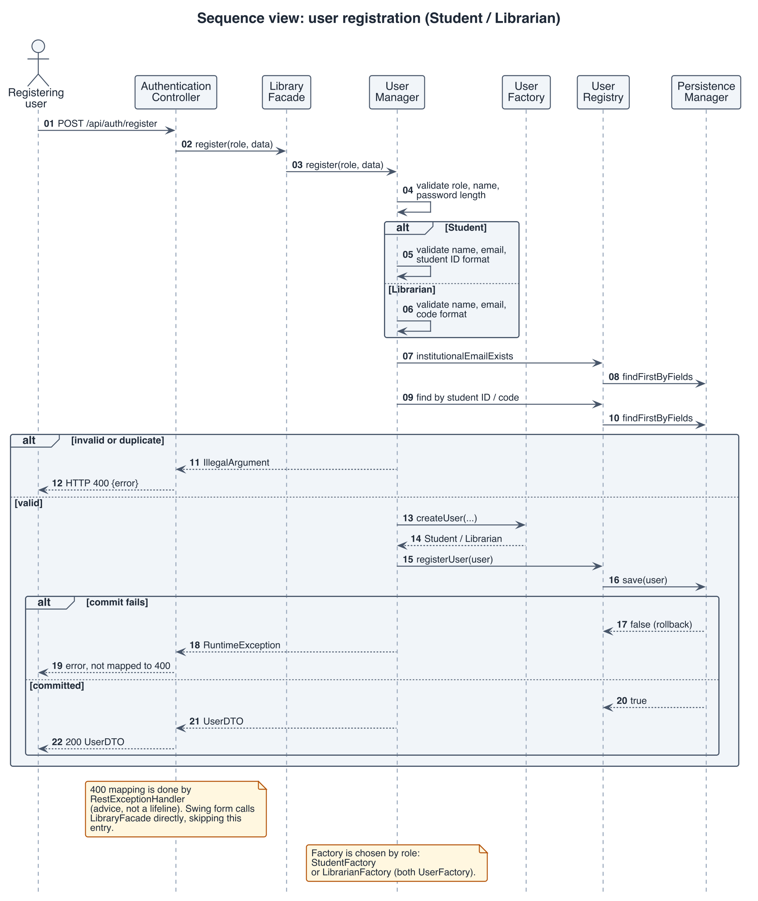
0 nodes, 0 edges; layout issues 4 (group-label-on-lifeline 2, group-label-crosses-lifeline 1, message-spans-lifelines 1)
# Sequence view: user registration **Takeaway:** a registration request passes Controller -> Facade -> UserManager, which alone validates role-specific data and checks uniqueness through UserRegistry/PersistenceManager, then builds the user with a role factory and saves it; invalid or duplicate data ends as IllegalArgumentException (HTTP 400), a failed save as RuntimeException. Stakeholder: integration tester. Detail: balanced/detailed for one feature (7 lifelines, 22 messages incl. replies); engineering wording. ## Concern -> view - Handles the request: AuthenticationController (msgs 1-2, 12, 19, 22); Swing form bypasses it (note). - Validates personal data and role: UserManager self-calls 4-6. - Role-specific data (student ID / librarian code): alt Student/Librarian (5-6), uniqueness lookup (9-10), UserFactory (13-14). - Validity and uniqueness: UserManager + UserRegistry + PersistenceManager (7-10). - Persistence: UserRegistry -> PersistenceManager.save (15-16, 17/20). - Invalid/existing data: alt at 11-12; save failure alt at 17-19. - Integration points to test: Controller-Facade-UserManager, UserManager-UserRegistry-PersistenceManager (lookups and save), UserManager-UserFactory, exception-to-HTTP mapping. ## Inventory (file:line, under JavaProject/src/main/java/it/unina/reservations) - AuthenticationController: boundary/SpringBoot/AuthenticationController.java:22-31 - LibraryFacade: controller/LibraryFacade.java:37-40 - UserManager: controller/UserManager.java:65-97 (validation :52-58, :173-198, :199-221) - UserFactory/StudentFactory/LibrarianFactory: controller/factory/StudentFactory.java:8-18 - UserRegistry: entity/UserRegistry.java:26-67 - PersistenceManager.save: database/PersistenceManager.java:19-37 - RestExceptionHandler (note only): boundary/SpringBoot/RestExceptionHandler.java:19-22 - Swing entry (note only): boundary/Swing/Registration.java:116-141 ## Omitted DTO mapping, JPA/JpaUtil, MySQL, web page, login flow, individual validation rules (collapsed into self-calls). ## Assumptions - Format-validation exceptions (steps 4-6) are thrown before the lookups; the single alt at 11-12 groups all 400 outcomes for brevity. - The unmapped RuntimeException is shown as "not mapped to 400" per RestExceptionHandler handling only IllegalArgument/IllegalState/Security; the resulting HTTP status (framework default) was not verified. ## Check puml-check: 2 warns left (aspect: tall sequence; one alt-label crossing a lifeline), no overlaps. Image reviewed: readable, no changes needed.
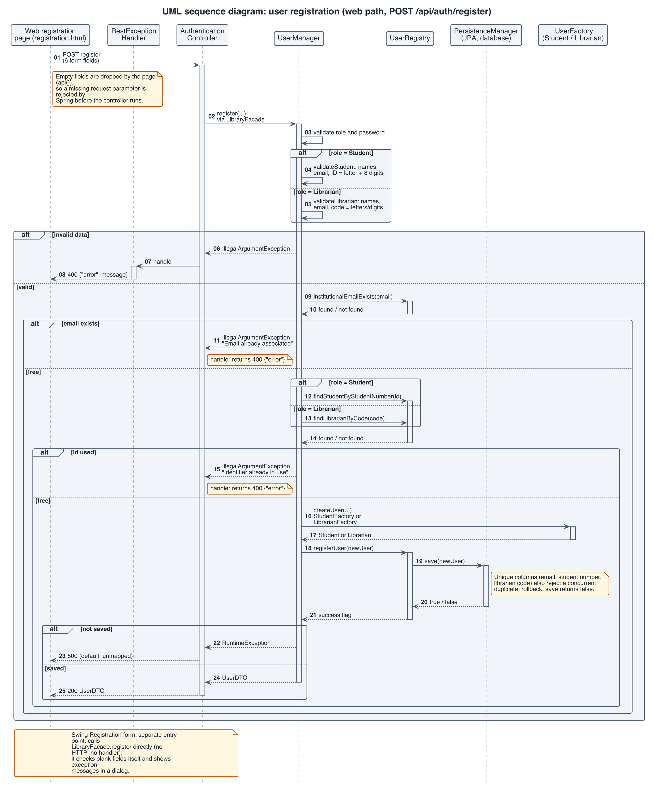
0 nodes, 0 edges; layout issues 4 (group-label-on-lifeline 3, message-spans-lifelines 1)
critic loop: kept v2 · first version
# UML sequence diagram: user registration (web path, POST /api/auth/register)
**Takeaway:** a registration request goes from the web page to `AuthenticationController` and on to `UserManager` (via `LibraryFacade`). `UserManager` validates by role, checks the email and then the role-specific identifier through `UserRegistry`, builds the user through the role's factory and saves it through `PersistenceManager`. Failures propagate back as exceptions; `RestExceptionHandler` turns the validation and duplicate ones into HTTP 400 `{error}`.
**Stakeholder:** integration tester. **Detail level:** detailed, for this one feature, with 7 lifelines and 25 messages, which is within the detailed budget (≤7, ≤25).
## How the view addresses the concern
| Concern detail | Where in the view |
|---|---|
| Handles the request | `Web registration page` (msg 01), `AuthenticationController` (02), `RestExceptionHandler` as its own lifeline (07-08) |
| Validates personal data and role | `UserManager` self-calls 03-05: role and password, then the Student or Librarian validation (`alt` on role) |
| Role-specific data | Student ID (letter + 8 digits) vs librarian code (letters/digits) in 04/05; `findStudentByStudentNumber` vs `findLibrarianByCode` in 12/13; the factory in 16-17 |
| Validity and uniqueness | Email lookup first (09-10, `[email exists]`), then the role-specific identifier lookup (12-14, `[id used]`), each with its own error message |
| Persists the new user | `registerUser` → `save` (18-21) and `[not saved]` / `[saved]` |
| Invalid or already existing data | `[invalid data]`, `[email exists]`, `[id used]` end in `IllegalArgumentException`, which becomes 400 `{error}`. `[not saved]` ends in an unmapped `RuntimeException` (default 500). A note says the DB unique columns also reject a concurrent duplicate, which ends in `[not saved]` |
| Integration points | Page↔controller (HTTP, empty fields dropped by the page), controller↔`UserManager`, `UserManager`↔`UserRegistry`↔`PersistenceManager`, `UserManager`↔factory, controller↔`RestExceptionHandler`. A note names the Swing form as a second entry point |
`inventory.json` holds the evidence. `check_inventory.py`: 0 issues, 7 elements, 12 relations.
## Changes in this revision (v1 is kept in `v1/`)
- Split the email and identifier duplicate checks, in the code's order (email first), with a role `alt` for validation, lookup and factory.
- `RestExceptionHandler` is now its own lifeline. The factories are one `:UserFactory` lifeline, and the role is chosen in the message label.
- The user-as-actor is replaced by the web page as a participant. The Swing form is a note naming its separate entry point, since it calls `LibraryFacade.register` directly.
- The save-failure response is labelled as the default 500 (unmapped). A note covers the DB unique constraints and rollback.
- Removed `x2` and the `: persist` return-type notation, and added the note that the page drops empty fields.
## Reviewer points kept as before, and why
- **`LibraryFacade` as its own lifeline:** not added. The class is pure delegation, and an 8th lifeline would exceed the 7-lifeline budget. It is named in msg 02. As a result exceptions are drawn from `UserManager` back to the controller in one step, not through the facade.
- **Swing as a lifeline:** shown only as a note, for the same budget reason. It needs its own view or test list: a dialog message replaces the HTTP status.
- **Lookups to `PersistenceManager`:** the `UserRegistry`→`findFirstByFields` calls are collapsed into the lookup messages. Only `save` is drawn, because the persistence seam matters most there.
- **Reply arrows for exceptions:** kept as dashed replies labelled with the exception type, and the later branches refer to the first full handler path (07-08) in a note. The exception does reach `RestExceptionHandler` through Spring dispatch from the controller, which is how it is drawn.
## Omitted on purpose
Entities, `UserDTO`, `JpaUtil`, the login flow, `LibraryFacade` and the Swing lifeline (see above), and the repeated `findFirstByFields` calls.
## Assumptions and unconfirmed items
- The 500 for an unmapped `RuntimeException` is Spring's default (unconfirmed): the handler has no mapping and the status was not run.
- The `UserManager` self-calls are not tracked by `check_inventory.py`; they are listed under `omitted` with evidence.
## Check result
`puml-check`: OK, with 0 warnings in the final run. The earlier runs' lifeline-crossing warnings were fixed by moving the factory lifeline to the end and shortening labels. `check_inventory.py`: exit 0. I viewed the PNG. No second review has been done.
“I am a software developer. I need to modify the seat booking functionality and understand the main system components involved and how they interact.”
| entity of interest | application for booking study-room seats, with student and librarian users |
|---|---|
| stakeholder | software developer |
| perspective | about to modify the seat booking feature (detail level: overview) |
| concern | control_flow |
| concern details |
|
| aspect | structural, behavioural |
| viewpoint | component |
| model kind | UML component diagram |
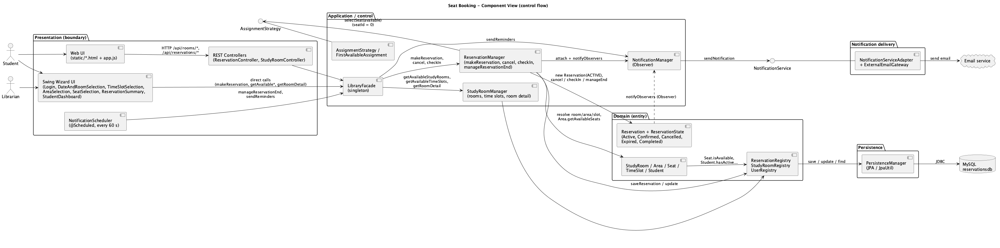
20 nodes, 24 edges; layout issues 5, 0.25 per node (edge-through-text 1, edge-through-cluster 1, edge-through-own-label 1, bundled-edges 1, busy 1)
# Seat booking – component view (UML component diagram) **Viewpoint/model kind:** component / UML component diagram. **Stakeholder:** developer about to modify seat booking. **Concern:** control flow. ## What it shows The components on the path of a seat booking and the calls between them, derived from `JavaProject/src/main/java/it/unina/reservations`: - **Presentation:** Swing wizard (students/librarians; `ReservationSummary` calls `makeReservation`), static web UI (`app.js` → `/api`), REST controllers (`/api/reservations/create`, `/api/rooms/...`), and `NotificationScheduler`. - **Control:** `LibraryFacade` (single entry point), `ReservationManager`, `StudyRoomManager`, `NotificationManager`, and the `AssignmentStrategy` interface (`FirstAvailableAssignment`). - **Domain:** `Reservation` with its state classes, room/area/seat/time-slot/student entities, and the three registries. - **Persistence/external:** `PersistenceManager` (JPA) → MySQL; `NotificationServiceAdapter` → email gateway. ## How it addresses the concern - **Main components involved in seat booking:** the packages and components above; the booking logic lives in `ReservationManager.makeReservation`, which validates room/area/slot/seat, enforces one active reservation per student and slot (`Student.hasActiveOrConfirmedReservation...`), picks the seat (explicit id, or `AssignmentStrategy` when seatId = 0), saves an ACTIVE `Reservation`, and notifies. - **How they interact:** edges are labelled with the calls. Both UIs (Swing directly, web via REST) go through `LibraryFacade`; the facade delegates to managers; managers use entities and registries, which persist via `PersistenceManager`. Seat availability is computed in the domain (`Area.getAvailableSeats` → `Seat.isAvailable` → `ReservationRegistry`). State changes are pushed to `NotificationManager` via the Observer link, which delivers through the `NotificationService` interface. The scheduler drives expiry/completion and reminders. Notes: the booking section is `synchronized` on `ReservationManager`; the notification is attached and fired after the reservation is saved. Not rendered/validated with PlantUML here.
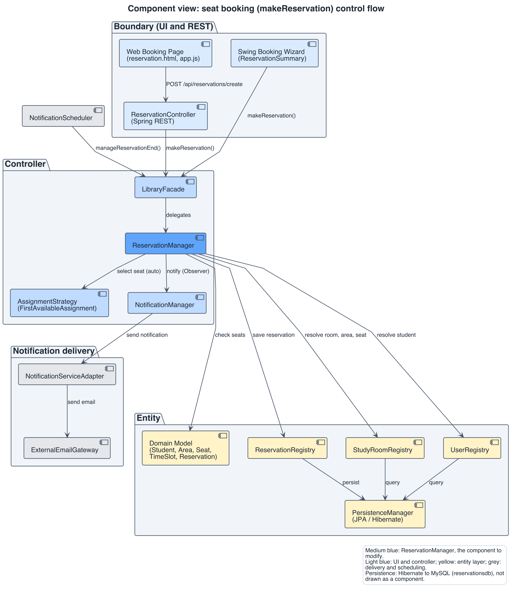
15 nodes, 16 edges; layout issues 1, 0.07 per node (busy 1)
# Component view: seat booking (IS-seat-L1) Files: `view.puml` (source), `view.png` (render). **Takeaway:** every booking request, from the Swing wizard or the web page, enters `LibraryFacade`. The facade delegates to `ReservationManager`, which validates the request, picks the seat, saves the reservation and notifies the student. **Stakeholder / detail:** software developer about to modify seat booking. The view is *detailed* for the booking path and shows 15 components, within the budget of 20. Wording is technical (Spring REST, JPA/Hibernate, Observer). ## How the concern is addressed - **Main components involved:** four layers are drawn. - Boundary: Swing wizard, web page, `ReservationController`. - Controller: `LibraryFacade`, `ReservationManager`, `AssignmentStrategy`, `NotificationManager`. - Entity: domain model, three registries, `PersistenceManager`. - Notification delivery: adapter and email gateway. `ReservationManager` is highlighted as the component to modify. - **How they interact (control flow):** each edge is a call, labelled with the operation or protocol. The flow is UI/REST → facade → `ReservationManager`. From there it resolves room, area, seat and student through the registries, checks seat availability on the domain model, and selects a seat via the strategy when the seat is automatic (id 0). It then saves the reservation and notifies via the Observer. `NotificationScheduler` is the other entry point into the facade, via `manageReservationEnd()`. - **Structural and behavioural aspects:** components and dependencies give the structure. Labelled call directions give the behaviour. Call order is not drawn; a sequence view would show it. ## Inventory (element → evidence) | Element | Evidence | |---|---| | Swing Booking Wizard | `boundary/Swing/ReservationSummary.java:100` | | Web Booking Page | `static/reservation.html:385` (`POST /reservations/create`), `static/app.js:2,10` | | ReservationController | `boundary/SpringBoot/ReservationController.java:21-38` | | LibraryFacade | `controller/LibraryFacade.java` (`makeReservation`, `manageReservationEnd`) | | ReservationManager | `controller/ReservationManager.java:61` (`makeReservation`) | | AssignmentStrategy / FirstAvailableAssignment | `controller/strategy/*`, `ReservationManager.java:29,258` | | NotificationManager | `ReservationManager.java:114-117`, `controller/NotificationManager.java:15,40` | | Domain model | `ReservationManager.java:92,100,122` (`Area.getAvailableSeats`, `Seat.isAvailable`, `Student`, `Reservation`) | | ReservationRegistry / StudyRoomRegistry / UserRegistry | `ReservationManager.java:25-27` | | PersistenceManager | `entity/ReservationRegistry.java:17-20`, `entity/StudyRoomRegistry.java:17-20`; Hibernate/MySQL in `META-INF/persistence.xml:8,21` | | NotificationServiceAdapter, ExternalEmailGateway | `boundary/NotificationConfiguration.java:17`, `boundary/NotificationServiceAdapter.java:12` | | NotificationScheduler | `boundary/NotificationScheduler.java:19-30` | ## Omitted on purpose - DTOs and `RestExceptionHandler`. - The other Swing wizard steps. - `StudyRoomManager` and `StudyRoomController`, which serve the room, slot and seat queries before booking. They are not on the `makeReservation` path. - Other managers (`UserManager`, user factories). - Reservation state classes. - The MySQL database, which is only named in the legend. ## Assumptions - The Swing wizard is represented by `ReservationSummary`, the only step that calls `makeReservation`. The earlier wizard steps are folded into it. - The three registries and the domain classes are grouped as the Entity layer, as the package layout does. - The Hibernate/MySQL link comes from `persistence.xml`. I did not check how `PersistenceManager` uses it. ## Check result - `puml-check`: 0 overlap, edge or text issues. The one remaining warning is `aspect` (the view is taller than 16:9), accepted because the view is meant as a page, not a slide. - Image review changes: - Removed the `StudyRoomManager` edge, because it is off the booking path. - Lightened the `ReservationManager` fill so its text is readable. - Gave the `ReservationManager` edges separate ranks so their labels don't crowd.
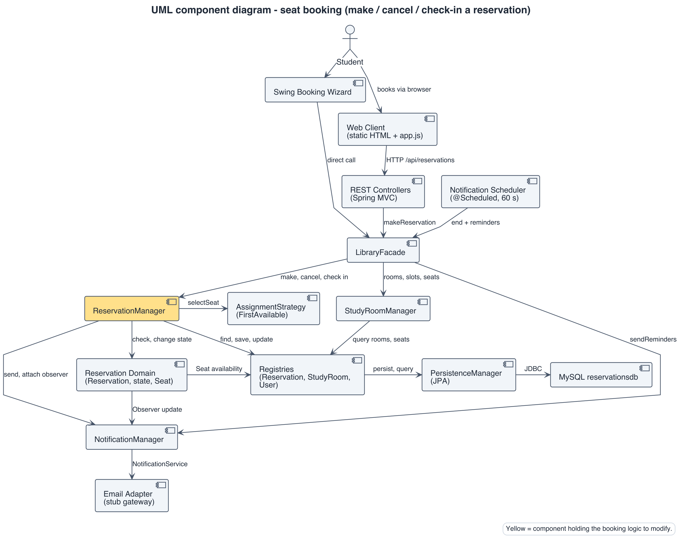
15 nodes, 19 edges; layout issues 1, 0.07 per node (busy 1)
# UML component diagram: seat booking (view.puml / view.png) **Takeaway:** a booking request from the web or Swing UI enters through `LibraryFacade`, is executed by `ReservationManager` (which uses the domain, the registries, a seat-assignment strategy and `NotificationManager`), and is persisted via `PersistenceManager` to MySQL. Stakeholder: software developer about to modify seat booking. Detail: *detailed* for the booking path (ReservationManager highlighted), overview elsewhere (15 nodes, within the ≤20 budget). Wording: technology names kept. ## Concern → where answered - **Main components involved:** all boxes; yellow `ReservationManager` is the place the booking rules live (`makeReservation`, `cancelReservation`, `performCheckIn`). - **How they interact:** labelled edges, caller → callee. Entry: Web Client → REST Controllers → LibraryFacade, or Swing → LibraryFacade; down through managers to registries, persistence and DB; side paths to the seat-assignment strategy and notifications (Observer + `NotificationService`). - Control flow order inside one booking is *not* shown (needs a sequence view): resolve student/room/area/slot → validate seat → (synchronized) uniqueness, availability, seat choice → save → notify. ## Inventory (element → evidence) - Web Client: `static/reservation.html:385` POST `/reservations/create`; `static/app.js:2` `API='/api'`. - Swing Booking Wizard: `boundary/Swing/ReservationSummary.java:100`, `DateAndRoomSelection.java:214`, `TimeSlotSelection.java:87`, `AreaSelection.java:85`. - REST Controllers: `boundary/SpringBoot/ReservationController.java:15-49` (create/cancel/checkIn → facade). - Notification Scheduler: `boundary/NotificationScheduler.java:15-29` (60 s; `@EnableScheduling` in `ReservationsApplication.java:13`). - LibraryFacade: `controller/LibraryFacade.java:117-164` (delegates to managers). - ReservationManager: `controller/ReservationManager.java:65-102` (make), `:205` cancel, `:240` check-in; notify `:120-123`, `:220`. - StudyRoomManager: `controller/StudyRoomManager.java:196,225,263` (rooms, slots, detail). - AssignmentStrategy: `controller/strategy/AssignmentStrategy.java:10`, `FirstAvailableAssignment.java:15`; used `ReservationManager.java:39,400`. - Reservation Domain: `entity/Reservation.java:82-88` (setState notifies), `:101-126` state transitions; `entity/state/*`; `entity/Seat.java:44` availability. - Registries: `entity/ReservationRegistry.java:33-56`; `StudyRoomRegistry`, `UserRegistry` (`ReservationManager.java:28-30`); Seat→registry `Seat.java:45`. - NotificationManager: `controller/NotificationManager.java:15,40,51,73`; interface `NotificationService.java:11`. - Email Adapter: `boundary/NotificationServiceAdapter.java:12-20`, `ExternalEmailGateway.java:12` (stub, returns 200); wired in `NotificationConfiguration.java:17`. - PersistenceManager: `database/PersistenceManager.java:19,74,185`; MySQL: `META-INF/persistence.xml:21`. ## Omitted on purpose DTOs, Area/TimeSlot/Student entities as separate boxes, JpaUtil, user registration/login, room creation, librarian monitoring, `StudentController`/`StudyRoomController` as separate boxes (merged into REST Controllers). Librarian actor is omitted: the librarian does not book seats. ## Assumptions - "Registries" merges three registry classes; "Reservation Domain" merges Reservation, its state classes and Seat. - The Observer edge is drawn Domain → NotificationManager since `ReservationManager` attaches it (`:121`, `:248`). - Cancel/check-in/end flows are included as they share the booking components. ## Check result puml-check: 0 crossings, 0 text overlaps; 1 `aspect` warning (ratio 1.26, tall) kept because left-to-right gave 6.0 and unpackaged TB with ranksep 70 gave 0.61; packaged layers gave 7 warnings. Image review added the missing ReservationManager→NotificationManager edge and a missing label.
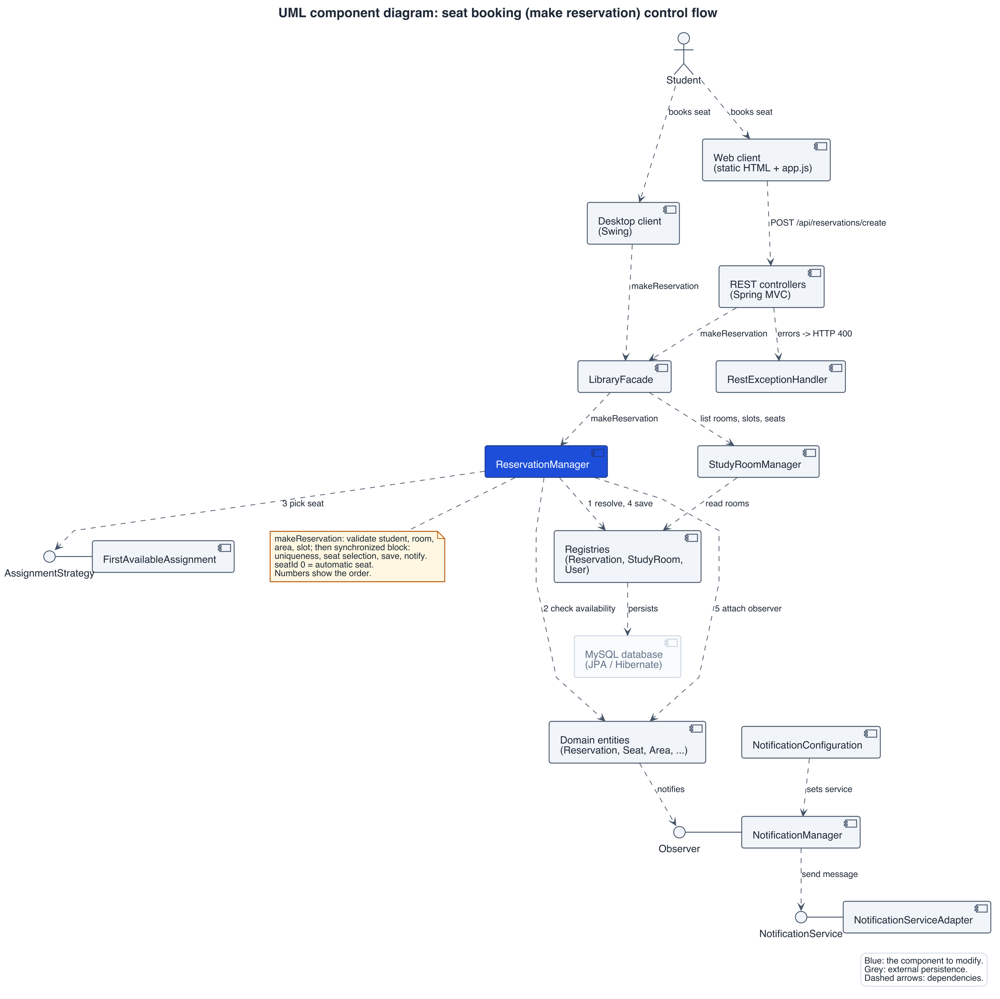
18 nodes, 21 edges; layout issues 2, 0.11 per node (text-on-node 1, busy 1)
critic loop: kept v2 · first version
# Seat booking: component view (UML component diagram), revision 2 **Takeaway:** a booking request goes client → REST controllers (or Swing directly) → `LibraryFacade` → `ReservationManager`, which validates, picks a seat through the `AssignmentStrategy` interface, saves via the registries and triggers notification through the Observer path from the `Reservation` entity. **Stakeholder:** software developer about to modify seat booking. **Detail level:** detailed for the booking path only (18 nodes incl. 3 interfaces and 1 actor, 20 relations in `inventory.json`); engineering wording. ## Concern coverage - *Main components involved*: web client, Swing client, REST controllers, `RestExceptionHandler`, `LibraryFacade`, `ReservationManager` (blue, holds the booking rules), `StudyRoomManager` (wizard steps), `FirstAvailableAssignment`, domain entities, registries, `NotificationManager`, `NotificationServiceAdapter`, `NotificationConfiguration`, MySQL. - *How they interact*: dashed dependencies; numbers 1-5 on `ReservationManager` edges give the order (1 resolve, 2 check availability, 3 pick seat, 4 save, 5 attach observer). The note on `ReservationManager` lists the steps and the synchronized block; `seatId` 0 = automatic seat. Interfaces `AssignmentStrategy`, `Observer` and `NotificationService` show the extension points. The error path is `REST controllers` → `RestExceptionHandler` (HTTP 400). ## Changes after critique 1 (previous version in `v1/`) - Added `RestExceptionHandler`, `NotificationConfiguration`, the three interfaces, the endpoint `POST /api/reservations/create`. - Split the strategy into interface + `FirstAvailableAssignment`; notification now runs `Reservation` → `Observer` ← `NotificationManager` instead of a direct `ReservationManager` call. - Note moved to `ReservationManager`; edges numbered; solid arrows replaced by dashed dependencies; Librarian actor removed. - **Not adopted:** a drawn system boundary. The database is a muted external component outside the logic, and a container would add nesting and edge-through-title risk without new information. The database also stays a plain component, since «database» is not a UML standard stereotype. ## Omitted on purpose Librarian/room creation, `NotificationScheduler`, `UserManager`, factories, DTOs, state classes, cancel and check-in flows. Only the booking endpoint is named; `StudyRoomController` endpoints are covered by the "list rooms, slots, seats" edge. ## Assumptions Registries and `PersistenceManager` are merged; the stub `ExternalEmailGateway` is folded into the adapter. `RestExceptionHandler` also maps `SecurityException` to 401 (not drawn). ## Check result `check_inventory.py`: 0 issues, 0 unbacked items. `puml-check`: one `aspect` warning (ratio 1.0, taller than 16:9) and one `text-on-node` warning (the `AssignmentStrategy` label touches the left edge of the picture area); edge-through-text and bundled-edge warnings from the first draft were fixed by drawing the realization links sideways. Not independently re-reviewed.
“I am a software developer. I need to modify the seat booking functionality to introduce new booking rules. Before changing the code, I need to understand the main components involved in this functionality, their responsibilities, and how they interact with each other. I also want to identify which parts of the system may be affected by the modification.”
| entity of interest | application for booking study-room seats, with student and librarian users |
|---|---|
| stakeholder | software developer |
| perspective | about to add new booking rules to seat booking (detail level: balanced) |
| concern | general |
| concern details |
|
| aspect | structural |
| viewpoint | component |
| model kind | UML component diagram |
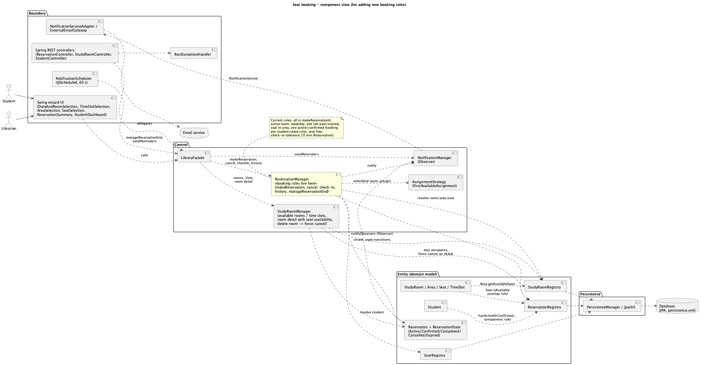
21 nodes, 29 edges; layout issues 12, 0.57 per node (edge-through-text 6, bundled-edges 3, edge-through-own-label 1, label-on-border 1, busy 1)
# Seat booking – component view (UML component diagram) **Stakeholder / concern:** a developer about to add new booking rules. Viewpoint: component; aspect: structural. Derived from `JavaProject/src/main/java/it/unina/reservations`. ## What it shows Layers (Boundary, Control, Entity, Persistence) and the components on the seat-booking path, with dependency arrows labelled by the interaction. ## How it addresses the concern - **Main components and responsibilities.** Component names and stereotypes state the role. The key one is `ReservationManager`, highlighted. It orchestrates `makeReservation` (validation, seat choice, save, notify), cancel, check-in, and expiry or completion. `StudyRoomManager` computes room, slot and seat availability. `AssignmentStrategy` auto-assigns a seat. `NotificationManager` is the Observer for booking events. The registries hide persistence. `Reservation` and its State classes hold the lifecycle. - **Interactions.** Swing UI, REST controllers and the scheduler all enter through `LibraryFacade`. The facade delegates to the managers. `ReservationManager` uses the registries, the strategy and the notifications. `Reservation` notifies `NotificationManager`. The registries go through `PersistenceManager` to the database. Notifications go through the adapter to email. - **Likely impact of new rules.** - *Primary:* `ReservationManager.makeReservation` and its validators. - *Rules scattered in entities:* `Student.hasActiveOrConfirmedReservationForDateAndSlot`, `Seat.isAvailable`, `Reservation` (check-in tolerance, state transitions). - *Query support:* `ReservationRegistry`, which would need new queries if a rule needs new data such as per-day limits. - *Consistency:* `StudyRoomManager` availability views (room, slot and seat listings shown to the user) should reflect the new rules, or the UI will offer options that are then rejected. - *Seat selection:* `AssignmentStrategy`, if the rules change auto-assignment. - *Interface contract:* `LibraryFacade`, REST controllers, `ReservationRequestDTO` and the Swing screens, only if inputs or error messages change. - *Notifications:* new rules that produce new messages. - Tests in `src/test/.../MakeReservationTest` cover the booking path. Notes: the static HTML pages in `resources/static` contain no `/api/` calls, so they are omitted. The booking path is the Swing UI plus the REST API.
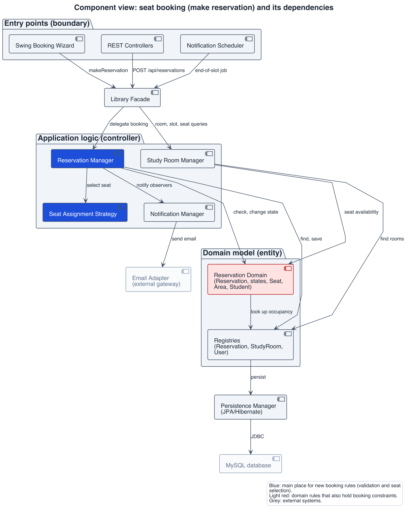
13 nodes, 15 edges; layout issues 3, 0.23 per node (edge-through-text 2, bundled-edges 1)
# Component view: seat booking and its dependencies **Takeaway:** a booking request flows from three entry points through `Library Facade` into `Reservation Manager`, which holds the booking rules (validation, seat selection) and delegates to the reservation domain, the registries and notifications. A new rule changes `Reservation Manager` first. It may also change the domain rules, `Seat Assignment Strategy` and the entry points' error handling. Stakeholder: software developer about to add booking rules. Detail level: **detailed** for the booking area only (13 components, within the ≤20 budget). Wording uses technology names, since the reader is an engineer. ## How the concern is answered - **Components and responsibilities**: each box is named for its role. Responsibilities are in the inventory below. - **Interaction**: the labelled arrows show who calls whom. Flow runs top to bottom: entry points → facade → managers → domain/registries → persistence → MySQL. - **Affected parts**: blue marks the places for new rules. Light red marks domain classes that already hold booking constraints. Everything downstream of `Reservation Manager` (registries, persistence) is affected only if a rule needs new data. Notification Manager is affected only if a rule adds a message. ## Inventory (element → evidence, `JavaProject/src/main/java/it/unina/reservations/`) | Element | Responsibility | Evidence | |---|---|---| | Swing Booking Wizard | Desktop UI; submits the reservation | `boundary/Swing/ReservationSummary.java:100`, `DateAndRoomSelection.java:214`, `TimeSlotSelection.java:87` | | REST Controllers | `POST /api/reservations/create`, cancel, check-in; room/slot/detail queries. `RestExceptionHandler` turns rule violations into HTTP 400 | `boundary/SpringBoot/ReservationController.java:21-49`, `StudyRoomController.java:44-65`, `RestExceptionHandler.java:19` | | Notification Scheduler | Every minute runs end-of-reservation handling and reminders | `boundary/NotificationScheduler.java:15-29` | | Library Facade | Single entry that delegates to the managers | `controller/LibraryFacade.java:117,81-102` | | Reservation Manager | Booking rules: room/area/slot/seat checks, one reservation per student per slot, seat selection, save, notify; also cancel, check-in, expiry | `controller/ReservationManager.java:65-197,357-401` | | Seat Assignment Strategy | Picks the seat when none is chosen (first available) | `controller/strategy/AssignmentStrategy.java:10`, `FirstAvailableAssignment.java:15`; used at `ReservationManager.java:400` | | Study Room Manager | Room, slot and seat availability queries for the booking screens | `controller/StudyRoomManager.java:196-289` | | Notification Manager | Observer of `Reservation`; sends emails | `controller/NotificationManager.java:14-47`, `ReservationManager.java:120` | | Reservation Domain | `Reservation`, its state classes, `Seat`, `Area` and `Student`. Holds the 6-hour cancellation window, the 10-minute check-in tolerance and seat/student occupancy checks | `entity/Reservation.java:19,156-164`, `Seat.java:44`, `Area.java:49`, `Student.java:42` | | Registries | Reservation, StudyRoom and User lookup and save | `entity/ReservationRegistry.java:33-123`, `ReservationManager.java:28-30` | | Persistence Manager | JPA/Hibernate access | `database/PersistenceManager.java`, `ReservationRegistry.java:20` | | MySQL database | Stores the data | `resources/META-INF/persistence.xml:21` | | Email Adapter | Implements `NotificationService`; sends through `ExternalEmailGateway` | `boundary/NotificationServiceAdapter.java:12-20`, `NotificationConfiguration.java:17` | ## Omitted on purpose DTOs, the user and room management paths (`UserManager`, factories, `StudyRoomManager` create/delete), the Swing screens other than the booking ones, the reminder path from facade to Notification Manager, and the reservation state classes as separate boxes. This keeps the view on the booking path. ## Assumptions / unconfirmed - The static web pages in `resources/static` were not shown to call the reservation API (no `/api/` match), so no web client is drawn. - `SeatSelection.java` was not checked for how it obtains seat data, so its edge is not drawn. - `NotificationScheduler` is shown calling the facade for the end-of-slot job only; the reminder path is omitted. - The state classes are inside Reservation Domain. ## Check result Final `puml-check`: 3 warnings, no text overlaps, 13 nodes, 15 edges. They are `aspect` (the diagram is tall, 0.80 ratio, because it is layered), and two edges that pass through package areas (`facade→roommgr`, `roommgr→dom`) plus bundled edges at Study Room Manager. The image review found a visible `«accent»`-style stereotype label, which is not a UML standard stereotype; I replaced it with inline colours and the legend. The first render was too wide and was switched to top-to-bottom. The facade→Notification Manager edge was dropped because it was off the booking path.
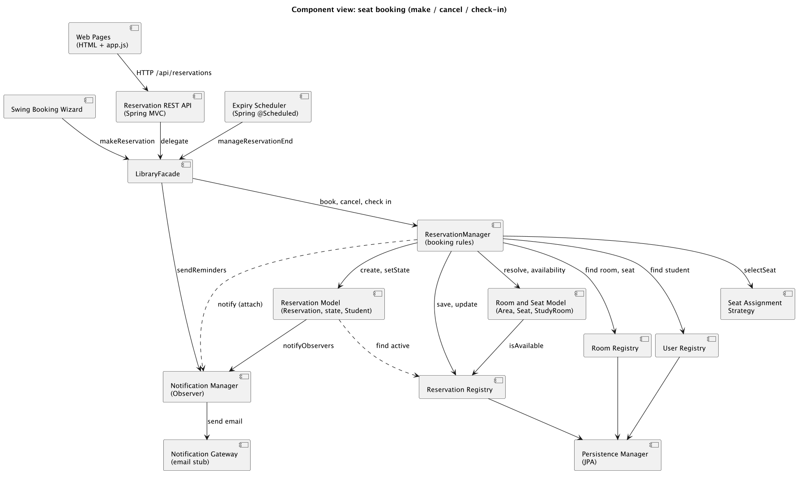
15 nodes, 20 edges; layout issues 1, 0.07 per node (busy 1)
# Component view: seat booking **Takeaway:** every booking request, from web or Swing, funnels through `LibraryFacade` into `ReservationManager`. That class holds all booking rules and collaborates with the registries, the domain model, the seat-assignment strategy and the notification observer. New rules belong in `ReservationManager`, and possibly in the model classes it calls. Stakeholder: software developer about to add booking rules. Detail level: *detailed* for the booking area only (15 components, within the ≤20 budget). Wording uses technology names (Spring, JPA, HTTP), since the audience is engineering. ## How the view answers the concern - **Components and responsibilities:** each box carries its responsibility in its name (see inventory). - **Interaction:** edges run caller to callee with a verb label. Dashed edges are dependencies the code resolves through a singleton or observer, not a direct field. - **Affected parts:** - Primary: `ReservationManager`. - Likely: Reservation Model (`Student.hasActiveOrConfirmedReservationForDateAndSlot` is already a rule), Room and Seat Model (`Seat.isAvailable`, `Area.getAvailableSeats`), and the Reservation Registry queries. - If a rule needs new inputs: `ReservationRequestDTO`, the REST API and the UIs (entry points, so a rule changing the request shape touches them). - Notification Manager, if a rule adds a message. - Everything below the registries is unaffected unless the schema changes. ## Inventory (element → evidence) - Web Pages: `static/reservation.html:385` (POST /reservations/create), `app.js:2` - Swing Booking Wizard: `boundary/Swing/ReservationSummary.java:100` - Reservation REST API: `boundary/SpringBoot/ReservationController.java:15-49` - Expiry Scheduler: `boundary/NotificationScheduler.java:15-29` - LibraryFacade: `controller/LibraryFacade.java:117-150`, `:162` - ReservationManager: `controller/ReservationManager.java:65-102` (rules: `:104`, `:151`, `:142`, `:378`) - Seat Assignment Strategy: `controller/strategy/AssignmentStrategy.java:10`, set at `ReservationManager.java:39` - Notification Manager: `controller/NotificationManager.java:15`, attached at `ReservationManager.java:120-123` - Reservation Model: `entity/Reservation.java:16`, `:179-182`, `entity/Student.java:42` - Room and Seat Model: `entity/Seat.java:44-52`, `entity/Area.java:49` - Reservation, Room, User Registry: `entity/ReservationRegistry.java:33`, `StudyRoomRegistry.java:125`, `UserRegistry.java:16` - Persistence Manager: `database/PersistenceManager.java`, created in each registry (`ReservationRegistry.java:20`) - Notification Gateway: `boundary/ExternalEmailGateway.java:12` (stub), reached via `NotificationService` ## Omitted on purpose DTOs, state classes (folded into Reservation Model), factories, user registration, room management and monitoring, `RestExceptionHandler`, `NotificationServiceAdapter` / `NotificationConfiguration` (folded into the gateway), MySQL (a deployment concern). ## Assumptions - "Reservation Model" and "Room and Seat Model" group domain classes into one box each. They are not separate modules in the code. - `StudyRoomManager` also touches reservations (`controller/StudyRoomManager.java:167-174`, forced cancel on room deletion). It is omitted but is a possible impact point. ## Check puml-check: OK, 0 crossings, 0 warnings (the `busy` note is info only, 20 edges). The first run flagged an edge through its label, which I fixed. The image review needed no changes.
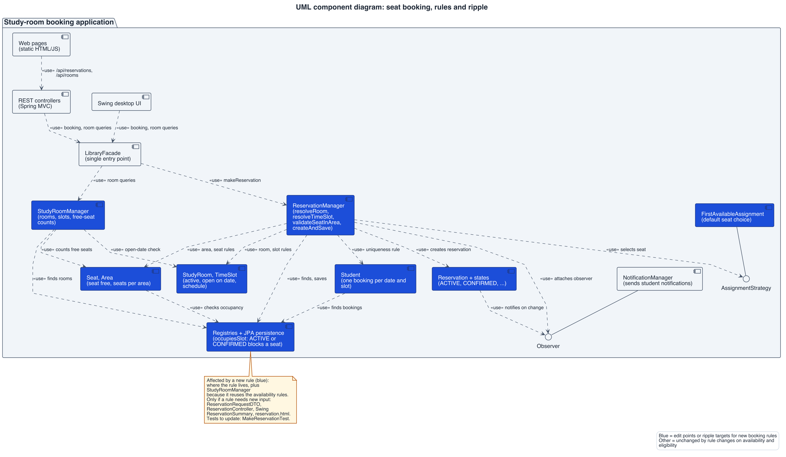
15 nodes, 20 edges; layout issues 2, 0.13 per node (edge-through-own-label 1, busy 1)
critic loop: kept v2 · first version
# Seat booking: UML component diagram (revision 1) **Takeaway:** a booking goes UI → REST → `LibraryFacade` → `ReservationManager`, which applies its rules through the room, seat, student and reservation parts of the domain model and the registries. `AssignmentStrategy` and `Observer` are the pluggable seams. Stakeholder: software developer about to add booking rules. Detail: **detailed** (15 components and interfaces plus the application boundary), because the developer is about to change this area. The previous version is in `v1/`. ## How the concern is answered - **Components and responsibilities:** every box carries its role. The old merged domain box is split into the rule-bearing parts: `StudyRoom, TimeSlot` (active, open on date, schedule), `Seat, Area` (seat free), `Student` (one booking per date and slot), and `Reservation + states`. `ReservationManager` lists its rule steps (`resolveRoom`, `resolveTimeSlot`, `validateSeatInArea`, `createAndSave`). - **Interactions:** relations are dashed «use» dependencies from caller to callee. `AssignmentStrategy` and `Observer` are interfaces (realised by `FirstAvailableAssignment` and `NotificationManager`). The notification path now runs through the `Observer` interface. The wizard's room and slot queries (`/api/rooms`, `StudyRoomManager`) are drawn next to the booking path. - **Affected parts:** blue marks edit points and ripple targets, and the note names them in the model as well. `ReservationRegistry.occupiesSlot` (inside "Registries + JPA persistence") is marked. `StudyRoomManager` is marked because it reuses `Area.getAvailableSeats` for the free-seat counts the UIs show. The note says `ReservationRequestDTO`, `ReservationController`, Swing `ReservationSummary` and `reservation.html` change only if a rule needs new input, and that `MakeReservationTest` needs updating. `inventory.json` holds elements, relations and evidence. `check_inventory.py`: 0 issues (16 elements including the boundary). ## Changes made after the review Split the domain box, dropped `NotificationScheduler`, `NotificationServiceAdapter` and MySQL, merged persistence into the registries box, added interfaces and the `Observer` path, switched to dashed dependencies, added the system boundary, and added the availability ripple and test/DTO note. ## Reviewer points not followed - **`NotificationScheduler` "not safe to call unaffected":** I dropped the scheduler as outside the booking flow. This is a cut, not a rebuttal: a rule about reservation lifetime or state would also touch `manageReservationEnd`, which moves reservations out of ACTIVE/CONFIRMED and so changes what `occupiesSlot` counts. See Omitted. - **Colour stereotypes:** I kept `<<accent>>` for emphasis (the skill's allowed styling stereotype, hidden in the render) but the note now states the affected parts in text. - **`NotificationService` interface and the email adapter:** not drawn. `NotificationManager` depends on the `NotificationService` interface, with `NotificationServiceAdapter` injected at startup in `NotificationConfiguration`. This is peripheral to booking rules. ## Omitted on purpose `NotificationScheduler`, `NotificationServiceAdapter`, MySQL, DTOs, `UserManager`, factories, `RestExceptionHandler`, and the cancel, check-in and monitoring flows. Outside the booking path or external. ## Assumptions - Persistence (`PersistenceManager`, `JpaUtil`) is merged into the registries box. - `ReservationManager` attaches `NotificationManager` as an observer (`ReservationManager.notifyReservation`). The view draws it through the `Observer` interface. ## Check result `puml-check`: renders, 1 crossing, two warnings: tiny text (7.3 px when scaled to 1200 px wide) and one edge label crossed by its own edge. Dropping the «use» prefixes made it worse (three warnings), so I reverted. Ratio 1.72 against the 16:9 target. v1 had two warnings and a tall 0.99 ratio, so this version is wider but denser.
“I am a software developer. I need to modify the seat booking functionality to introduce new booking rules. Before making changes to the code, I need to understand the high-level architecture supporting this functionality. I want to identify the main components involved in the booking process, their responsibilities, and the interactions and dependencies among them. In particular, I need to understand which components are responsible for handling booking requests, checking seat availability, applying booking rules, managing and storing reservations, and interacting with external services such as the notification service. This understanding will help me identify which parts of the system need to be modified and which other components may be affected by the changes.”
| entity of interest | application for booking study-room seats, with student and librarian users |
|---|---|
| stakeholder | software developer |
| perspective | about to add new booking rules; needs the architecture behind seat booking (detail level: balanced) |
| concern | control_flow, connectivity |
| concern details |
|
| aspect | structural, behavioural |
| viewpoint | component |
| model kind | UML component diagram |
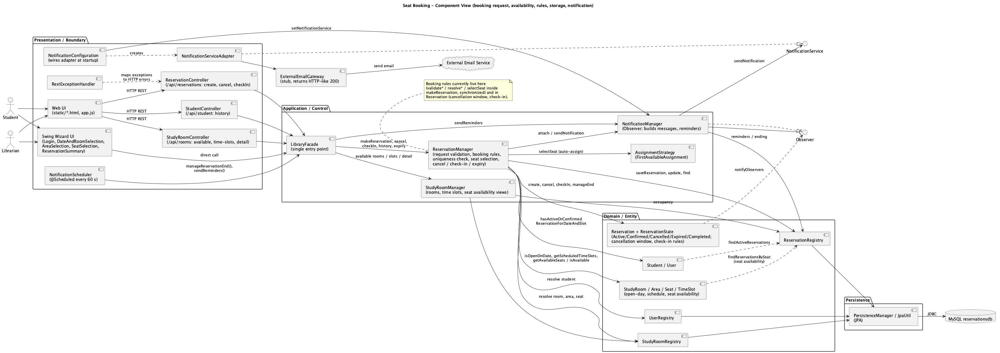
28 nodes, 43 edges; layout issues 9, 0.32 per node (edge-through-text 6, label-on-border 1, bundled-edges 1, busy 1)
# Seat booking – component view (UML component diagram) Source: `view.puml`. Derived from `JavaProject/src/main/java/it/unina/reservations`. **What it shows.** The components on the seat-booking path, grouped in layers (boundary, control, entity, persistence), the external email service, and the calls between them. Student and librarian use either the web UI (REST) or the Swing wizard (direct facade calls). **How it addresses the concern** - *Handling booking requests:* `ReservationController` (`POST /api/reservations/create`) and the Swing `ReservationSummary` both go through `LibraryFacade` to `ReservationManager.makeReservation`. - *Checking seat availability:* `StudyRoomController` and `StudyRoomManager` serve availability to the UI. During booking, `ReservationManager` calls `Area.getAvailableSeats` and `Seat.isAvailable`, which query `ReservationRegistry`. - *Applying booking rules:* these live in `ReservationManager` (room active and open, slot not past, seat in area, one reservation per student and slot, seat selection under a `synchronized` block). `AssignmentStrategy` handles automatic seat choice. `Reservation` and its states hold the cancellation window and check-in rules. This is where new rules go. - *Managing and storing reservations:* `ReservationManager`, `Reservation`, `ReservationRegistry`, `PersistenceManager` (JPA), MySQL. - *External services:* `Reservation` notifies `NotificationManager` (Observer), which uses the `NotificationService` interface. `NotificationServiceAdapter` and `ExternalEmailGateway` (a stub) reach the email service. `NotificationConfiguration` wires the adapter at startup. - *Impact of changes:* a new rule mainly touches `ReservationManager` and possibly `Reservation` / `Student` / `Seat`. It may affect `ReservationRegistry` queries, the `ReservationRequestDTO` / `ReservationController` parameters, `RestExceptionHandler` and the UIs (error display), `NotificationManager` messages, and `NotificationScheduler`-driven expiry and reminders.
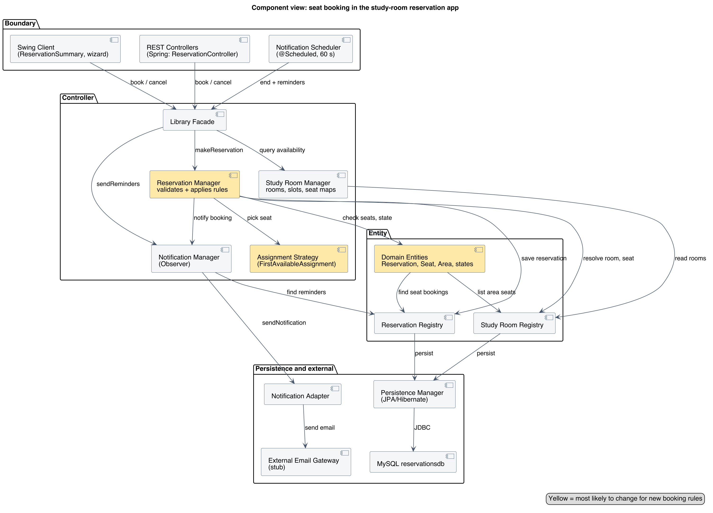
15 nodes, 20 edges; layout issues 8, 0.53 per node (edge-through-text 3, label-on-border 2, edge-through-own-label 1, bundled-edges 1, busy 1)
# Component view: seat booking (IS-seat-L3) **Takeaway:** every booking enters through `LibraryFacade`; `ReservationManager` validates the request and applies the booking rules, with seat availability checked in the domain entities and seat choice delegated to `AssignmentStrategy`. Reservations are stored through `ReservationRegistry` and `PersistenceManager` into MySQL, and `NotificationManager` sends notices through an adapter to an email gateway. Stakeholder: software developer adding booking rules. Detail level: detailed for the booking path (15 components, within the 20 budget). Technology names are included because the audience is engineering. Yellow marks the components most likely to change. ## How the view answers the concern - **Handles booking requests:** Swing Client and REST Controllers call Library Facade, which calls Reservation Manager (`makeReservation`). - **Checks seat availability:** Reservation Manager calls Domain Entities (`Area.getAvailableSeats`, `Seat.isAvailable`), which query Reservation Registry for existing bookings and Study Room Registry for the area's seats. Study Room Manager serves the availability queries used by the UI. - **Applies booking rules:** Reservation Manager (room active and open, slot not past, one booking per student and slot, seat in area, locked section) and Assignment Strategy (automatic seat choice). - **Manages and stores reservations:** Reservation Manager, Domain Entities (Reservation and its states), Reservation Registry, Persistence Manager, MySQL. - **External services:** Notification Manager → Notification Adapter → External Email Gateway (a stub). - **Modify / affected:** Reservation Manager, Assignment Strategy and Domain Entities are the likely change points. Affected: Library Facade (if the API changes), Notification Manager, the registries, and the Swing and REST callers. ## Inventory (element → evidence) Paths are under `JavaProject/src/main/java/it/unina/reservations/`. - Swing Client → `boundary/Swing/ReservationSummary.java:100` - REST Controllers → `boundary/SpringBoot/ReservationController.java:21-48` - Notification Scheduler → `boundary/NotificationScheduler.java:15-28` - Library Facade → `controller/LibraryFacade.java:117-164` - Reservation Manager → `controller/ReservationManager.java:65-102` - Study Room Manager → `controller/StudyRoomManager.java` (`getRoomDetail`) - Assignment Strategy → `controller/strategy/AssignmentStrategy.java`, `ReservationManager.java:400` - Notification Manager → `controller/NotificationManager.java:15-66` - Domain Entities → `entity/Area.java:49`, `entity/Seat.java:44`, `entity/Reservation.java` - Reservation Registry and Study Room Registry → `entity/ReservationRegistry.java:33`, `ReservationManager.java:28-30` - Persistence Manager → `database/PersistenceManager.java` - MySQL reservationsdb → `src/main/resources/META-INF/persistence.xml:21` - Notification Adapter and External Email Gateway → `boundary/NotificationServiceAdapter.java`, `boundary/ExternalEmailGateway.java:12` - Wiring of the adapter into the manager → `boundary/NotificationConfiguration.java:17` ## Omitted on purpose DTOs, User and Librarian components, the Observer and ReservationState classes (shown as part of Domain Entities), the static web front end, `UserRegistry` and `NotificationConfiguration`. The cancel, check-in and expiry flows are shown only as the facade's inbound calls. A sequence view would show the order of the checks. ## Assumptions - The Study Room Manager → Study Room Registry edge is based on `getRoomDetail` (`StudyRoomManager.java:264-284`); I did not trace its other methods. - The web front end (`static/app.js`) probably calls the REST controllers, but I did not confirm it and left it out. ## Check result `puml-check` reports 7 warnings: edges crossing package borders, one label on a border, and edges bundled out of Reservation Manager. The aspect ratio is 1.39 against the 1.78 target. A revision with a reordering and a hidden link also gave 7, so I reverted it. The single change after reading the image was replacing the in-diagram note with a legend, which went from 6 to 7 warnings. I kept the legend because the diagram reads the same either way and a legend is the proper notation. The warnings are layout issues, not content issues.
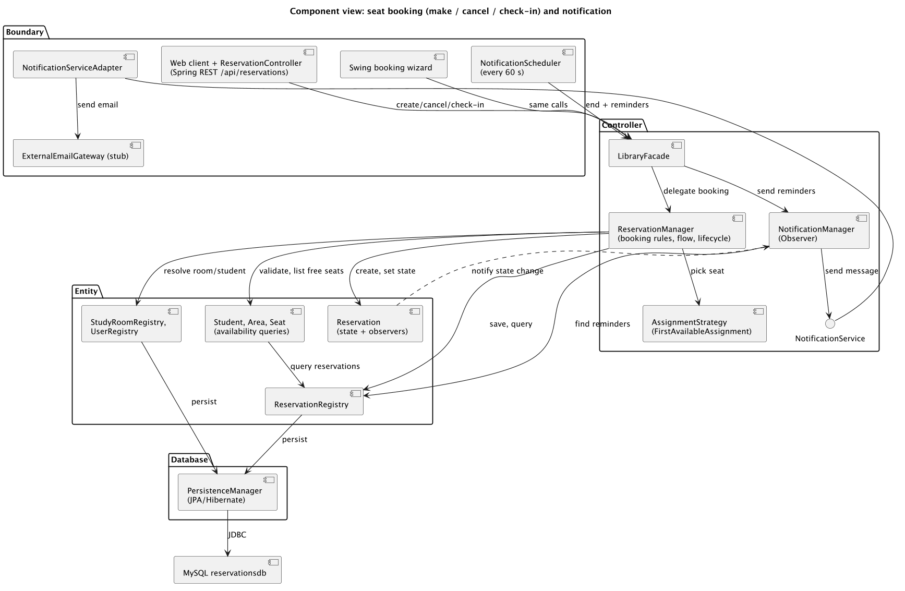
16 nodes, 19 edges; layout issues 7, 0.44 per node (bundled-edges 3, edge-through-text 2, label-on-border 1, busy 1)
# Component view: seat booking and notification (IS-seat-L3) **Takeaway:** every booking request enters through LibraryFacade and is handled, validated and stored by ReservationManager, so new booking rules belong in ReservationManager (plus the entity availability queries and AssignmentStrategy). Notifications are a side effect triggered by Reservation state changes. Stakeholder: software developer about to add booking rules. Detail: *detailed* for the booking area (16 elements), technology names included. Files: `view.puml`, `view.png`. ## How the view answers the concern - **Handle booking requests:** REST ReservationController, Swing wizard and NotificationScheduler all call LibraryFacade, which delegates to ReservationManager. - **Check seat availability:** ReservationManager asks the entities (Area.getAvailableSeats, Seat.isAvailable), which query ReservationRegistry directly. - **Apply booking rules:** inside ReservationManager.makeReservation (seat-in-area, one reservation per student/date/slot via Student, availability, seat choice). Seat choice is pluggable through AssignmentStrategy. - **Manage and store reservations:** ReservationManager creates the Reservation (state pattern), saves it via ReservationRegistry -> PersistenceManager -> MySQL. - **External services:** Reservation.setState notifies observers; NotificationManager sends through the NotificationService interface, implemented by NotificationServiceAdapter -> ExternalEmailGateway (stub). - **Impact:** change ReservationManager first. Also affected: Student/Area/Seat (rules that query reservations), ReservationRegistry, REST/Swing callers if the request fields change (ReservationRequestDTO), NotificationManager if new rejections need messages. ## Inventory (file:line, under JavaProject/src/main/java/it/unina/reservations) - Web/REST ReservationController: boundary/SpringBoot/ReservationController.java:15-49 - Swing wizard: boundary/Swing/ReservationSummary.java:100 - NotificationScheduler: boundary/NotificationScheduler.java:15-29 - LibraryFacade: controller/LibraryFacade.java:117-150, 162 - ReservationManager: controller/ReservationManager.java:65-102 (rules :104, :142, :151; strategy :400; notify :121-122; save :134) - AssignmentStrategy / FirstAvailableAssignment: controller/strategy/AssignmentStrategy.java, ReservationManager.java:39 - NotificationManager: controller/NotificationManager.java:15,40-60; NotificationService.java:11 - NotificationServiceAdapter: boundary/NotificationServiceAdapter.java:12; ExternalEmailGateway.java:12 (stub); wiring NotificationConfiguration.java:17 - Reservation: entity/Reservation.java:82-88; Student/Seat/Area: entity/Student.java:42, Seat.java:44-52, Area.java:49 - ReservationRegistry: entity/ReservationRegistry.java:33,61,77,120; StudyRoomRegistry, UserRegistry (ReservationManager.java:28-30) - PersistenceManager: database/PersistenceManager.java:19-37; MySQL: resources/META-INF/persistence.xml:21 ## Omitted on purpose DTOs, state classes, factories, registration/login and room-management flows, StudyRoomManager, monitoring and statistics, REST exception handler, web pages. ## Assumptions - Entity and registry classes are drawn as components in the "Entity" package; they are really one layer of classes. - Notification delivery failures are caught and logged in NotificationManager (:57-59), so they do not abort a booking. ## Check result Final puml-check: 6 warnings (3 bundled-edge, 1 edge-through-text, 1 label-on-border, 1 container-crossing), none overlapping. A left-to-right variant had 4 warnings but tiny text, and a variant with a realization arrow had 7; both were discarded. Image review: layout reads top to bottom, labels sit on their edges.
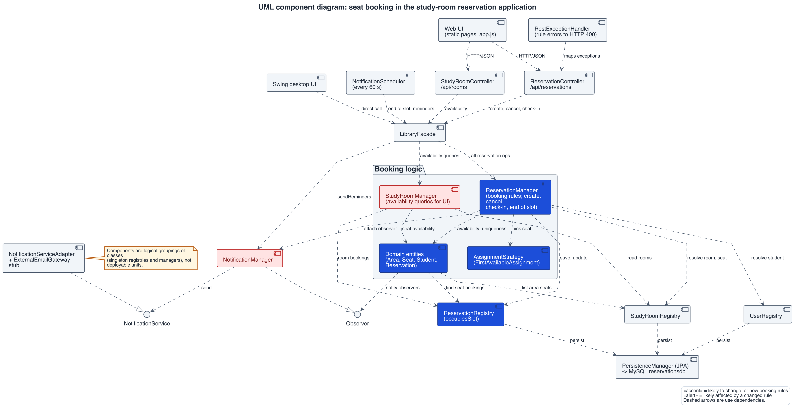
19 nodes, 28 edges; layout issues 5, 0.26 per node (edge-through-text 1, edge-through-own-label 1, detached-label 1, label-on-border 1, busy 1)
critic loop: kept v2 · first version
# Seat booking: component view (revision 1) **Takeaway:** a booking enters through `ReservationController` (REST) or the Swing UI, passes `LibraryFacade` to `ReservationManager`, which applies the booking rules together with the domain entities, stores the reservation through the registries and JPA, and notifies the student through the Observer mechanism and the `NotificationService` interface. **Stakeholder:** software developer about to add booking rules. **Level:** detailed, because a change is imminent. Wording uses code names. The previous version is in `v1/`. ## How the view answers the concern - **Handling requests:** Web UI (to `ReservationController` for create/cancel/check-in and `StudyRoomController` for availability), Swing UI, `RestExceptionHandler` (rule exceptions become HTTP 400, so a new rule's rejection reaches the client here), `LibraryFacade`. - **Checking availability:** `ReservationManager` calls the domain entities (`Seat.isAvailable`, `Area.getAvailableSeats`), which query `ReservationRegistry` (`occupiesSlot`) and `StudyRoomRegistry`. `StudyRoomManager` runs the same check for the UI. - **Applying rules:** `ReservationManager` (room, area, seat, slot and uniqueness checks; seat choice via `AssignmentStrategy`) and the entities. The manager node says it also handles cancel, check-in and end of slot (the scheduler reaches it through the facade). - **Managing and storing reservations:** `ReservationRegistry`, `StudyRoomRegistry`, `UserRegistry` (student lookup on every booking), `PersistenceManager` (JPA, MySQL). - **External services:** `NotificationManager` provides `Observer` (attached by `ReservationManager`, called by `Reservation`) and requires `NotificationService`, provided by the e-mail adapter and stub gateway. `NotificationScheduler` triggers reminders and end-of-slot handling. - **Modify vs. affected:** marked in the diagram. Blue (`accent`): `ReservationManager`, domain entities, `AssignmentStrategy`, `ReservationRegistry`. Red (`alert`): `StudyRoomManager` and `NotificationManager`. Also affected but not coloured: `RestExceptionHandler` and the REST and Swing clients. `inventory.json` holds elements, relations and evidence. `check_inventory.py`: exit 0 (20 elements, 28 relations). ## Changes after the review - Added `UserRegistry`, `StudyRoomController`, `RestExceptionHandler`, and the dependencies domain entities -> `StudyRoomRegistry`, `StudyRoomManager` -> entities and `ReservationRegistry` (all verified in code). - `NotificationService` and `Observer` are now UML interfaces (realization arrows). The two separate "notify" edges became one mechanism: attach observer, notify observers. - Relations are dashed use dependencies. The `muted` stereotype is gone. A note says components are logical groupings of classes. - `facade -> ReservationManager` is relabelled "all reservation ops". `PersistenceManager` and MySQL merged into one component. - Four grouping packages (Clients, Request handling, Storage, Notification) were dropped. Only "Booking logic" remains, because the detailed budget is 20 elements and packages count. `NotificationScheduler` is therefore a standalone component, which also fixes its placement under "Clients". - Not done: interfaces are drawn with realization/use arrows, not ball-and-socket, because the inventory check cannot read that notation. Colour marks change impact, with a legend; no operations are listed on `ReservationManager`, only its responsibilities in the label. ## Omitted on purpose DTOs, state classes, factories, `UserManager`, authentication, monitoring and student controllers, `NotificationConfiguration` (wiring). ## Assumptions "Domain entities" merges `Area`, `Seat`, `Student`, `Reservation`. The e-mail gateway is a stub returning 200. `RestExceptionHandler` is shown applying to `ReservationController` only (it is a `@RestControllerAdvice`, so it covers all controllers). ## Check result `puml-check`: renders, 5 warnings (v1 had 7): tiny text when scaled to 1200 px, one edge through the "Booking logic" title, one edge through its own label, one detached label, one label on the container border. The diagram is dense (28 edges), and I stopped after this one revision.